<!doctype html>
<html lang="en">
<head>
  <meta charset="utf-8">
  <meta name="viewport" content="width=device-width, initial-scale=1">
  <title>arxiv digest — 2026-06-23</title>
  <style>
:root {
  --bg: #ffffff;
  --fg: #1f2328;
  --muted: #59636e;
  --border: #d0d7de;
  --card: #f6f8fa;
  --link: #0969da;
}
body {
  max-width: 980px;
  margin: 0 auto;
  padding: 2rem 1rem 5rem;
  font-family: -apple-system, BlinkMacSystemFont, "Segoe UI", Helvetica, Arial, sans-serif;
  line-height: 1.55;
  color: var(--fg);
  background: var(--bg);
}
a { color: var(--link); }
img { max-width: 100%; height: auto; }
pre, code { background: var(--card); border-radius: 6px; }
pre { padding: 1rem; overflow-x: auto; }
blockquote { border-left: 4px solid var(--border); padding-left: 1rem; color: var(--muted); }
details { margin: 0.6rem 0; }
summary { cursor: pointer; font-weight: 600; }
.paper-figures-scroll {
  display: flex;
  gap: 1rem;
  overflow-x: auto;
  overscroll-behavior-x: contain;
  padding: 0.75rem 0.25rem 1rem;
  margin: 1rem 0 1.25rem;
  border-top: 1px solid var(--border);
  border-bottom: 1px solid var(--border);
  scroll-snap-type: x proximity;
}
.paper-figure-card {
  flex: 0 0 min(260px, 72vw);
  scroll-snap-align: start;
  background: var(--card);
  border: 1px solid var(--border);
  border-radius: 12px;
  padding: 0.55rem;
}
.paper-figure-card img {
  display: block;
  width: 100%;
  max-height: 240px;
  object-fit: contain;
  background: white;
  border-radius: 8px;
}
.paper-figure-caption {
  display: block;
  margin-top: 0.5rem;
  color: var(--muted);
  font-size: 0.85rem;
}
.figure-strip-hint {
  color: var(--muted);
  font-size: 0.9rem;
  margin-bottom: -0.3rem;
}
</style>
  <!-- MathJax: renders $...$ inline math and $$...$$ display math, plus
       \(...\) and \[...\]. Loaded from the official CDN; works offline
       once cached. Configured to skip code/pre blocks so arxiv IDs that
       look like dollar amounts don't get mangled. -->
  <script>
    window.MathJax = {
      tex: {
        inlineMath: [['$', '$'], ['\\(', '\\)']],
        displayMath: [['$$', '$$'], ['\\[', '\\]']],
        processEscapes: true,
        processEnvironments: true
      },
      options: {
        skipHtmlTags: ['script', 'noscript', 'style', 'textarea', 'pre', 'code'],
        ignoreHtmlClass: 'tex2jax_ignore',
        processHtmlClass: 'tex2jax_process'
      }
    };
  </script>
  <script id="MathJax-script" async
    src="https://cdn.jsdelivr.net/npm/mathjax@3/es5/tex-chtml.js"></script>
</head>
<body>
<header style="background-color: #333; color: white; padding: 15px; margin-bottom: 20px;">
  <h1 style="margin: 0; font-size: 24px;">
    <a href="https://ochelpan.github.io/arXiv_clean/" style="color: white; text-decoration: none;">Main</a>
  </h1>
</header>

<h1>Daily arXiv Report</h1>

<hr>
<p>
<a href="index.html">← Index</a>
 · <a href="papers_06.html">← Previous</a> · <a href="papers_08.html">Next →</a>
</p>
<hr>

<h2>Papers 121–140</h2>
<p><a id="paper-2606.22398"></a></p>
<h3 id="percolation-of-zero-weight-paths-and-the-shape-of-the-phase-boundary-in-the-two-dimensional-random-bond-ising-model"><a href="http://arxiv.org/abs/2606.22398v1">Percolation of Zero-Weight Paths and the Shape of the Phase Boundary in the Two-Dimensional Random-Bond Ising Model</a></h3>
<p><strong>Authors:</strong> Amirhossein Manouchehri, Kirill Shtengel<br>
<strong>Type:</strong> theory · <strong>Category:</strong> disordered systems and neural networks · <strong>PDF:</strong> <a href="https://arxiv.org/pdf/2606.22398v1">https://arxiv.org/pdf/2606.22398v1</a><br>
<strong>Analysis basis:</strong> full PDF text, analyzed in chunks
<strong>Topic relevance:</strong> <code>analog quantum simulation</code> <strong>1/5</strong> · <code>driven-dissipative phase transition</code> <strong>1/5</strong> · <code>exotic spin models in light-matter</code> <strong>1/5</strong> · <code>non-equilibrium universality</code> <strong>1/5</strong></p>
<div class="figure-strip-hint">↔ Scroll figures horizontally</div>
<div class="paper-figures-scroll">
<figure class="paper-figure-card">
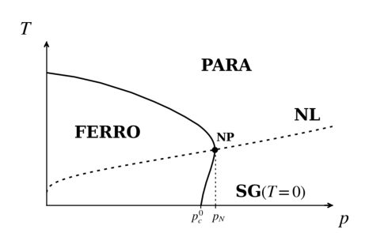
<figcaption class="paper-figure-caption"><b>Fig 1.</b> FIG. 1. Schematic phase diagram of the two-dimensional random-bond Ising model with the Nishimori line (NL) dashed. The relation p0 c ≤pN has been rigorously established but whether p0 c &lt; pN remains an open question.</figcaption>
</figure>
<figure class="paper-figure-card">
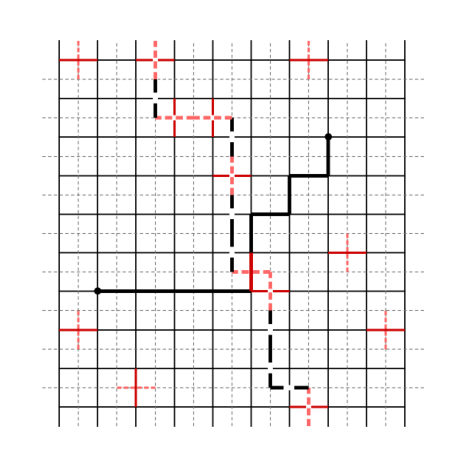
<figcaption class="paper-figure-caption"><b>Fig 2.</b> FIG. 2. Schematic illustration of the geometrical argument described in the text. Solid lines represent bonds on the origi- nal lattice, while dashed lines correspond to the dual lattice. Black and red bonds denote ferromagnetic and antiferromag- netic couplings, respectively. The highlighted thick dashed path indicates a system-spanning zero-weight path on the dual lattice, whereas the highlighted thick solid path represents a connection between two distant spins on the original lattice. Intersections between these paths change the parity of antifer- romagnetic bonds along the spin-connecting path.</figcaption>
</figure>
<figure class="paper-figure-card">
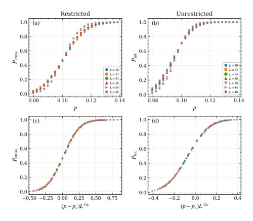
<figcaption class="paper-figure-caption"><b>Fig 3.</b> FIG. 3. Comparison of the percolation probability for the restricted (cross-window; left panels) and unrestricted (right panels) spanning criteria. The upper panels show the raw data Pcross(L, p) for system sizes L ∈{30, 32, 34, 36, 44, 48}, while the lower panels show the corresponding finite-size-scaling collapses. Restricted data were obtained using open boundary conditions in both directions, whereas unrestricted data were obtained using periodic boundary conditions horizontally and open boundary conditions vertically. The unrestricted criterion yields behavior qualitatively similar to that obtained using the cross-window definition, with only a small shift in the estimated critical...</figcaption>
</figure>
<figure class="paper-figure-card">
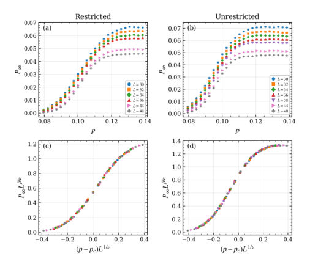
<figcaption class="paper-figure-caption"><b>Fig 4.</b> FIG. 4. Comparison of the normalized path-length observable P∞(L, p) = ⟨l⟩/L2 for the restricted (cross-window; left panels) and unrestricted (right panels) spanning criteria. The upper panels display the raw data, whereas the lower panels show the finite-size-scaling collapses used to extract the exponent ratio β/ν. The close agreement between the two definitions indicates that the cross-window constraint has only a minor effect on the order-parameter-like behavior of the spanning paths.</figcaption>
</figure>
<figure class="paper-figure-card">
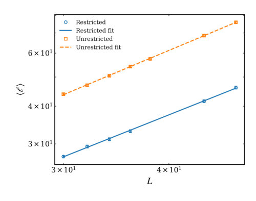
<figcaption class="paper-figure-caption"><b>Fig 5.</b> FIG. 5. Log-log plot of the mean spanning-path length ⟨l⟩= P∞L2 evaluated near criticality as a function of system size L for the restricted (cross-window) and unrestricted spanning criteria. The solid and dashed lines represent linear fits used to determine the corresponding fractal dimensions. While the unrestricted criterion produces systematically larger mean path lengths, the similar slopes indicate comparable geometric scaling behavior.</figcaption>
</figure>
</div>

<p><strong>Summary.</strong> This work analyzes the 2D random-bond Ising model by linking its ferromagnetic phase boundary to a purely geometrical phenomenon: zero-weight path percolation. Using advanced computational techniques like finite-size scaling, the authors determine the critical disorder strength for this percolation and propose that this geometric constraint dictates the stability of ferromagnetism in the disordered system.</p>
<p><strong>Why it may be interesting.</strong> While focused on classical statistical mechanics, the rigorous mathematical techniques used for analyzing critical phenomena in disordered systems (like FSS) are foundational tools applicable across many-body physics, including quantum spin glasses or frustrated quantum magnets.</p>
<details>
<summary>Detailed structure</summary>
<p><strong>Main problem.</strong> The paper investigates the connection between zero-weight path percolation and the low-temperature ferromagnetic phase boundary in the 2D random-bond Ising model.</p>
<p><strong>Main result.</strong> They calculate a critical disorder strength for zero-weight percolation ($p_c = 0.1000(2)$) and argue that this purely geometrical transition suggests the ferromagnetic phase boundary is vertical below the Nishimori point.</p>
<p><strong>Method.</strong> The study employs dynamic-programming algorithms combined with finite-size scaling analysis to locate critical points and extract universal critical exponents.</p>
<p><strong>Model / system.</strong> The system is a two-dimensional $\pm J$ random-bond Ising model on a square lattice, where bonds are ferromagnetic ($+J$) or antiferromagnetic ($-J$) based on the disorder probability $p$.</p>
<p><strong>Key observables.</strong> Zero-weight percolation threshold ($p_c$), critical exponents ($
u, eta/
u, \gamma/
u$), and fractal dimension ($d_f$).</p>
<p><strong>Important parameters / regimes.</strong> Disorder parameter $p$, system size $L$, temperature $T$ (analyzed relative to the Nishimori point).</p>
<p><strong>Assumptions / limitations.</strong> The onset of zero-weight percolation is assumed to be incompatible with ferromagnetic ordering, and that this geometrical criterion dictates the phase boundary shape.</p>
<p><strong>Figures summary.</strong> Figures illustrate schematic phase diagrams, finite-size scaling collapses for percolation probability, and log-log plots used to determine the fractal dimension of spanning paths.</p>
<p><strong>Paper structure.</strong> The paper systematically defines zero-weight paths on the dual lattice, relates their percolation to spin correlations via symmetry arguments, applies dynamic programming/FSS to find $p_c$, and compares this geometric transition to known magnetic phase boundaries.</p>
</details>
<details>
<summary>Abstract</summary>
<p>We explore the connection between the low-temperature boundary of the ferromagnetic phase in the two-dimensional $\pm J$ random-bond Ising model, where antiferromagnetic bonds occur with probability $p$ and a geometric transition dubbed ``zero-weight percolation''. We argue that the onset of this percolation characterized by the emergence of a percolating path containing an equal number of $+J$ and $-J$ bonds is incompatible with ferromagnetic ordering. Due to its purely geometrical nature, this percolation criterion is a property of a disorder realization and is independent of the temperature, which in turn suggests that the ferromagnetic phase boundary is vertical below the Nishimori point in the $(p,T)$ plane. Using a dynamic-programming algorithm combined with finite-size scaling, we identify the critical disorder at which zero-weight paths first percolate as $p_c = 0.1000(2)$, and we extract the associated critical exponents $ν= 1.26(1)$, $β/ν= 0.85(1)$, $γ/ν= 0.264(5)$, and fractal dimension $d_f \approx 1.11$. The value of $p_c$ is below the previously reported values of the critical disorder strength corresponding to the loss of the ferromagnetic order, both at zero temperature and the Nishimori point. Nevertheless, we argue that the percolation transition studied in this paper is behind the loss of ferromagnetism and thus provides a new, purely geometrical perspective on the stability of ferromagnetic order in disordered spin systems.</p>
</details>
<p><sub><a href="#top">↑ back to top</a></sub></p>

<p><a id="paper-2606.22407"></a></p>
<h3 id="perturbative-renormalization-and-universality-diagram-for-long-range-quantum-criticality"><a href="http://arxiv.org/abs/2606.22407v1">Perturbative Renormalization and Universality Diagram for Long-Range Quantum Criticality</a></h3>
<p><strong>Authors:</strong> Zhiyi Li, Zhijie Fan, Kun Chen, Youjin Deng<br>
<strong>Type:</strong> theory · <strong>Category:</strong> statistical mechanics · <strong>PDF:</strong> <a href="https://arxiv.org/pdf/2606.22407v1">https://arxiv.org/pdf/2606.22407v1</a><br>
<strong>Analysis basis:</strong> full PDF text, analyzed in chunks
<strong>Topic relevance:</strong> <code>Keldysh / 2PI / non-Gaussian methods</code> <strong>1/5</strong> · <code>analog quantum simulation</code> <strong>1/5</strong> · <code>driven-dissipative phase transition</code> <strong>1/5</strong> · <code>non-equilibrium universality</code> <strong>1/5</strong></p>
<div class="figure-strip-hint">↔ Scroll figures horizontally</div>
<div class="paper-figures-scroll">
<figure class="paper-figure-card">
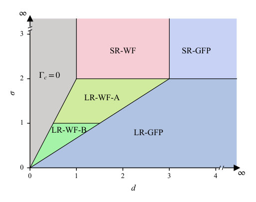
<figcaption class="paper-figure-caption"><b>Fig 1.</b> FIG. 1. Proposed universality diagram for quantum long- range O(n) spin models in the (d, σ) plane. The colored regions denote distinct zero-temperature quantum critical regimes: the region with no finite-field quantum criticality (Γc = 0), the LR Gaussian regime (LR-GFP), the interacting LR Wilson-Fisher sectors (LR-WF-A and LR-WF-B), the SR Wilson-Fisher regime (SR-WF), and the SR Gaussian regime (SR-GFP). Solid lines indicate the main boundaries of the di- agram. The lower and upper critical boundaries are scaling boundaries, with the SR lower and upper critical dimensions included on the short-range side; the σ = 2 line is the RG- supported LR–SR boundary; and the line at σ = 1 marks...</figcaption>
</figure>
<figure class="paper-figure-card">
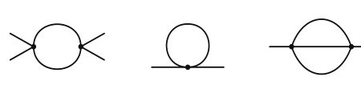
<figcaption class="paper-figure-caption"><b>Fig 2.</b> FIG. 2. The one-loop bubble (left) determines the beta func- tion and the WF fixed point. The one-loop tadpole (mid- dle) renormalizes the mass and gives the leading correction to yr = 1/ν. The two-loop sunset (right) produces the leading kinetic counterterms; the frequency and momentum projec- tions of this graph carry distinct pole structures. All notation is explained in the text and the Supplemental Material.</figcaption>
</figure>
<figure class="paper-figure-card">
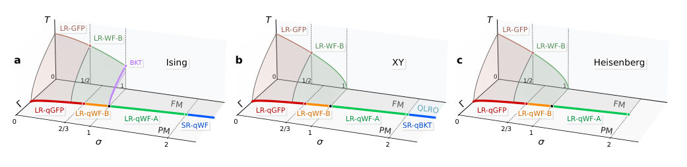
<figcaption class="paper-figure-caption"><b>Fig 3.</b> FIG. 3. Schematic temperature–quantum-coupling phase diagrams of one-dimensional long-range quantum spin chains: (a) transverse-field Ising, (b) quantum XY/rotor, and (c) quantum Heisenberg. The axes are temperature T, quantum coupling Γ, and decay exponent σ. Colored lines in the T = 0 plane denote quantum critical regimes: LR-qGFP for 0 &lt; σ &lt; 2/3, LR-qWF-B for 2/3 &lt; σ &lt; 1, LR-qWF-A for 1 &lt; σ &lt; 2, and the appropriate short-range quantum regime for σ &gt; 2. The prefix “q” distinguishes zero-temperature quantum fixed points from finite-temperature classical long-range regimes. For σ &lt; 1, the finite-temperature critical surfaces are inherited from the corresponding classical one-dimensional...</figcaption>
</figure>
</div>

<p><strong>Summary.</strong> This paper develops a perturbative Renormalization Group framework to analyze quantum criticality in models with long-range interactions. By calculating critical exponents up to two loops, the authors construct a comprehensive $(d, \sigma)$ universality diagram. This work provides a powerful theoretical tool for classifying and understanding exotic quantum phases beyond simple short-range approximations.</p>
<p><strong>Why it may be interesting.</strong> This work provides rigorous theoretical tools (RG flow equations) to classify quantum phase transitions governed by long-range forces, which is highly relevant for understanding exotic phases realized in modern quantum simulators.</p>
<details>
<summary>Detailed structure</summary>
<p><strong>Main problem.</strong> The paper develops a systematic theory for quantum criticality in models featuring long-range (LR) interactions, aiming to construct a comprehensive $(d, \sigma)$ universality diagram.</p>
<p><strong>Main result.</strong> Explicit two-loop calculations yield critical exponents ($
u$, $\eta_\omega$, $\eta_k$) that successfully connect the LR Gaussian regime, the interacting Wilson-Fisher sector, and the short-range (SR) limit at the boundary $\sigma^*=2$.</p>
<p><strong>Method.</strong> The primary method is perturbative Renormalization Group (RG) expansion, utilizing dimensional regularization ($d=3-\epsilon$, $\sigma=2-\delta$) to control divergences in the continuum field theory.</p>
<p><strong>Model / system.</strong> It studies ferromagnetic long-range quantum $O(n)$ spin models whose interactions decay as $1/r^{d+\sigma}$. The system is mapped onto a Euclidean continuum field theory with an action involving kinetic terms proportional to $(-\Delta)^{\sigma/2}$.</p>
<p><strong>Key observables.</strong> Correlation-length exponent ($
u$), frequency anomalous dimension ($\eta_\omega$), momentum anomalous dimension ($\eta_k$), and the dynamical exponent ($z$).</p>
<p><strong>Important parameters / regimes.</strong> The critical exponents depend on dimensionality $d$ and interaction decay exponent $\sigma$. Key regimes include the LR Gaussian boundary ($\sigma = 2d/3$) and the SR limit ($\sigma 	o 2$).</p>
<p><strong>Assumptions / limitations.</strong> The analysis relies on perturbative RG expansions, specifically performed up to two-loop order, and employs minimal subtraction for renormalization.</p>
<p><strong>Figures summary.</strong> Figure 1 proposes a $(d, \sigma)$ universality diagram mapping out various critical regimes (LR-GFP, LR-WF, SR-WF). Figure 2 illustrates the structure of RG calculations involving one-loop bubble integrals.</p>
<p><strong>Paper structure.</strong> The paper proceeds by defining the continuum field theory and parameterizing the problem using $\epsilon$ and $\delta$. It then performs multi-loop RG calculations to determine anomalous dimensions and critical exponents, culminating in the proposal and justification of a comprehensive $(d, \sigma)$ universality diagram.</p>
</details>
<details>
<summary>Abstract</summary>
<p>Experimental progress in quantum simulators highlights the role of long-range (LR) interactions in reshaping quantum criticality and stabilizing exotic phases beyond the short-range (SR) paradigm. We study ferromagnetic long-range quantum $O(n)$ models with interactions decaying as $1/r^{d+σ}$ and develop a perturbative renormalization-group expansion around the LR--SR boundary by setting $d=3-ε$ and $σ=2-δ$. In this parametrization, the full interacting LR window $2d/3<σ<2$ becomes $0<δ<2ε/3$, and is therefore perturbatively controlled. A two-loop calculation yields explicit expressions, in terms of $ε$, $δ$, and $n$, for the correlation-length exponent $ν$ and for the frequency and momentum anomalous dimensions $η_ω$ and $η_k$. The resulting exponents reduce to long-range Gaussian scaling at $σ=2d/3$ and to SR quantum Wilson-Fisher scaling in the $σ\to 2$ limit, thereby identifying $σ_*=2$ as the LR--SR boundary within the controlled $3-ε$ expansion. Combining the RG results with scaling boundaries and classical LR analogies, we propose a $(d,σ)$ universality diagram for ferromagnetic long-range quantum $O(n)$ criticality and use it as an organizing framework for the phase diagram of long-range quantum spin chains.</p>
</details>
<p><sub><a href="#top">↑ back to top</a></sub></p>

<p><a id="paper-2606.23264"></a></p>
<h3 id="jacobi-exceptional-orthogonal-polynomials-for-extended-scarf-i-potentials-with-position-dependent-mass"><a href="http://arxiv.org/abs/2606.23264v1">Jacobi exceptional orthogonal polynomials for extended Scarf I potentials with position-dependent mass</a></h3>
<p><strong>Authors:</strong> Christiane Quesne<br>
<strong>Type:</strong> theory · <strong>Category:</strong> other · <strong>PDF:</strong> <a href="https://arxiv.org/pdf/2606.23264v1">https://arxiv.org/pdf/2606.23264v1</a><br>
<strong>Analysis basis:</strong> full PDF text, analyzed in chunks
<strong>Topic relevance:</strong> <code>Keldysh / 2PI / non-Gaussian methods</code> <strong>1/5</strong> · <code>driven-dissipative phase transition</code> <strong>1/5</strong> · <code>methods for driven-dissipative</code> <strong>1/5</strong></p>
<div class="figure-strip-hint">↔ Scroll figures horizontally</div>
<div class="paper-figures-scroll">
<figure class="paper-figure-card">
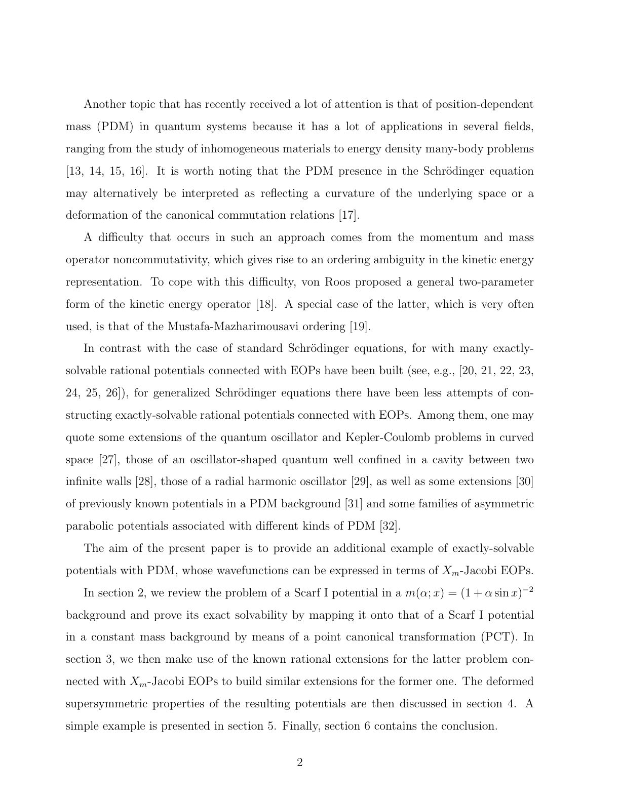
<figcaption class="paper-figure-caption"><b>Fig 1.</b> Low-resolution page preview, page 2</figcaption>
</figure>
<figure class="paper-figure-card">
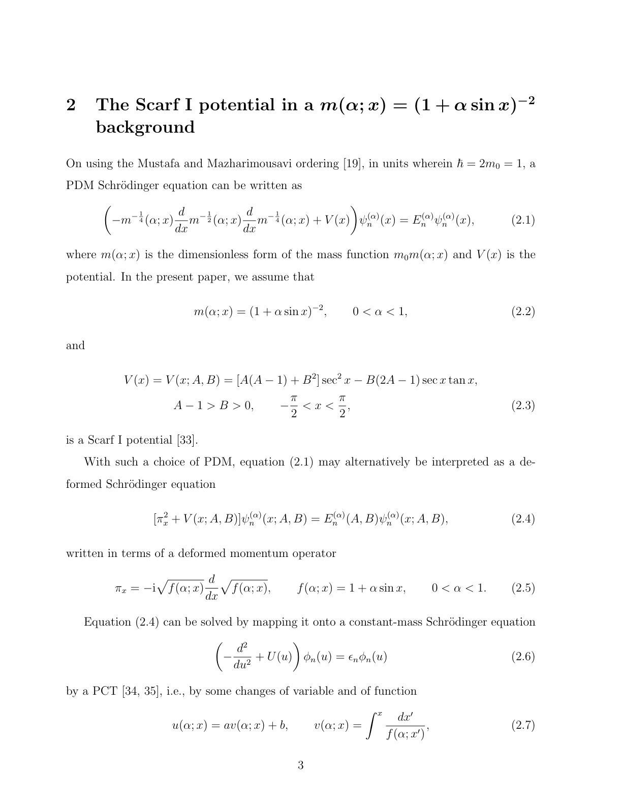
<figcaption class="paper-figure-caption"><b>Fig 2.</b> Low-resolution page preview, page 3</figcaption>
</figure>
<figure class="paper-figure-card">
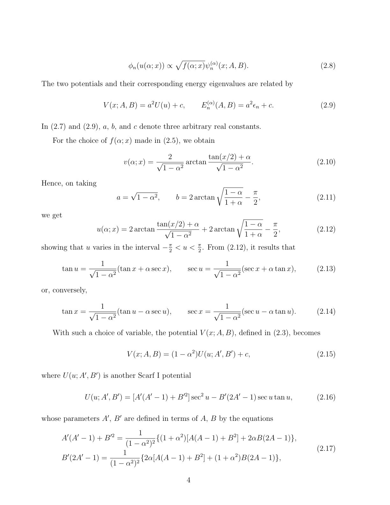
<figcaption class="paper-figure-caption"><b>Fig 3.</b> Low-resolution page preview, page 4</figcaption>
</figure>
<figure class="paper-figure-card">
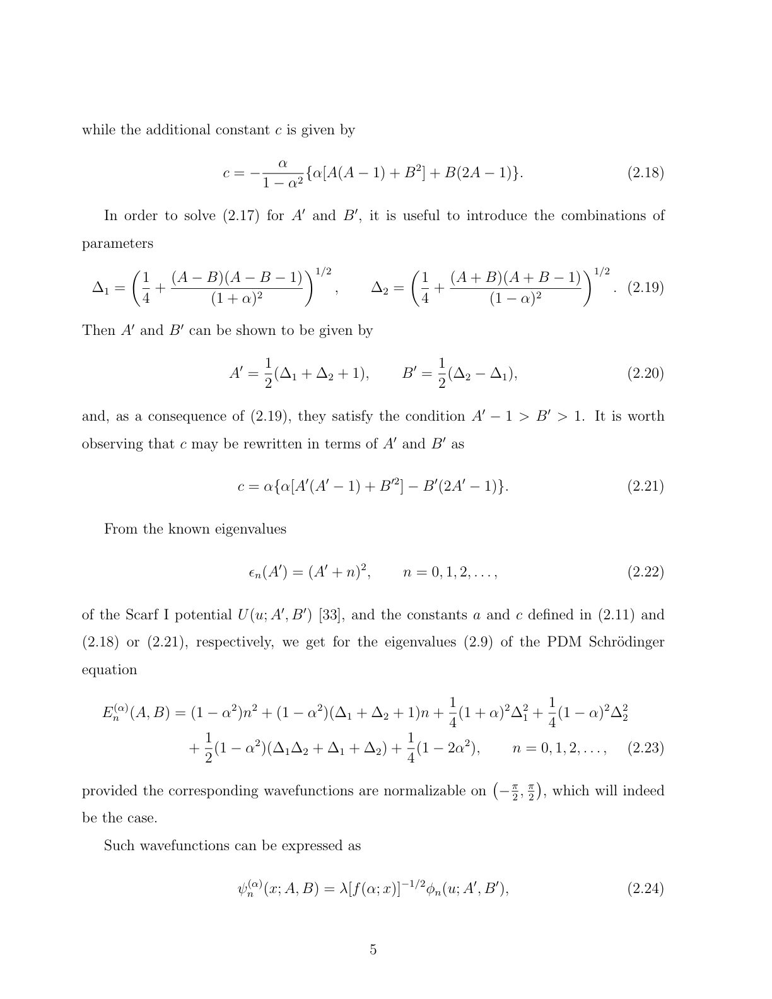
<figcaption class="paper-figure-caption"><b>Fig 4.</b> Low-resolution page preview, page 5</figcaption>
</figure>
<figure class="paper-figure-card">
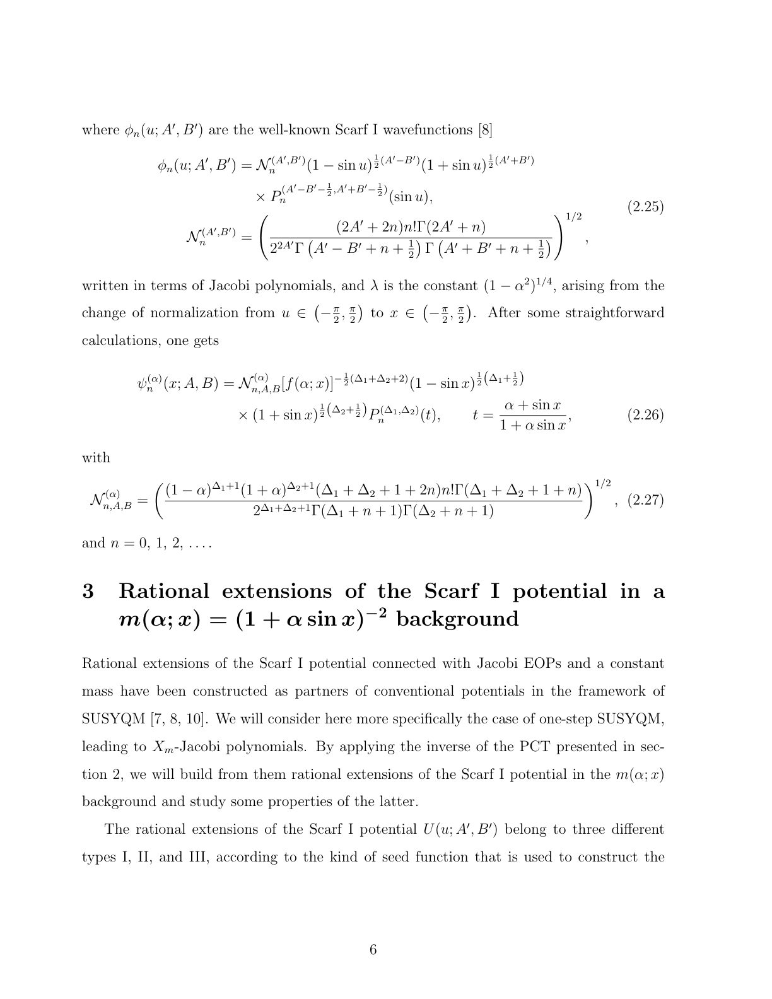
<figcaption class="paper-figure-caption"><b>Fig 5.</b> Low-resolution page preview, page 6</figcaption>
</figure>
</div>

<p><strong>Summary.</strong> This paper tackles the complex problem of finding exact solutions for a Schrödinger equation featuring both a Scarf I potential and a position-dependent mass. It achieves this by employing Point Canonical Transformations to simplify the Hamiltonian, revealing that the system possesses deformed shape invariance. The results characterize the energy spectrum using specialized mathematical tools like $X_m$-Jacobi exceptional orthogonal polynomials.</p>
<p><strong>Why it may be interesting.</strong> This work provides advanced techniques (PDM, EOPs, Deformed SUSY) to solve exactly solvable quantum problems, which is highly relevant for theoretical physicists studying non-standard Hamiltonians or effective models in AMO physics.</p>
<details>
<summary>Detailed structure</summary>
<p><strong>Main problem.</strong> The research aims to find exactly-solvable rational extensions of the Scarf I potential that incorporate a position-dependent mass (PDM) background.</p>
<p><strong>Main result.</strong> The PDM Scarf I potential exhibits deformed shape invariance, and its solutions are characterized by $X_m$-Jacobi exceptional orthogonal polynomials (EOPs).</p>
<p><strong>Method.</strong> The core methodology involves using Point Canonical Transformations (PCT) to map the complex PDM Schrödinger equation onto a simpler constant-mass system, followed by analyzing the resulting structure using deformed supersymmetric quantum mechanics.</p>
<p><strong>Model / system.</strong> The model is a one-dimensional time-independent Schrödinger equation featuring a Scarf I potential within a position-dependent mass background defined by $m(\alpha; x) = (1 + \alpha \sin x)^{-2}$.</p>
<p><strong>Key observables.</strong> Energy eigenvalues ($E(\alpha)_n$ and $\epsilon_{	ext{ext}}^n$) and the corresponding wavefunctions ($\psi_n$).</p>
<p><strong>Important parameters / regimes.</strong> The coupling constant $\alpha$, potential parameters $(A, B)$, and indices $m$.</p>
<p><strong>Assumptions / limitations.</strong> The analysis assumes the applicability of PCT mappings and the validity of deformed shape invariance properties within a supersymmetric framework.</p>
<p><strong>Figures summary.</strong> Not specified (Analysis relies on equations detailing transformations, potentials, and energy spectra).</p>
<p><strong>Paper structure.</strong> The paper proceeds by defining the PDM Hamiltonian, applying the Point Canonical Transformation to relate it to known constant-mass solvable models, deriving explicit forms for partner potentials and superpotentials using deformed SUSYQM, and finally presenting the resulting spectral properties.</p>
</details>
<details>
<summary>Abstract</summary>
<p>We show that the Scarf I potential problem in a position-dependent mass background of the type $m(α;x) = (1 + α\sin x)^{-2}$, $0<α<1$, can be solved by using a point canonical transformation mapping the corresponding Schr\" odinger equation onto that of the Scarf I potential with constant mass. The inverse point canonical transformation then provides some exactly-solvable rational extensions of the Scarf I potential with positive-dependent mass associated with $X_m$-Jacobi exceptional orthogonal polynomials of type I, II, or III. The Scarf I potential problem with position-dependent mass is shown to exhibit a deformed shape invariance property in a deformed supersymmetric framework. Such a property is also valid for extended potentials of type I and II. The results are illustrated with a simple example.</p>
</details>
<p><sub><a href="#top">↑ back to top</a></sub></p>

<p><a id="paper-2606.22107"></a></p>
<h3 id="spectral-and-thermodynamic-properties-of-supersymmetric-quantum-systems-with-self-adjoint-deformed-momentum"><a href="http://arxiv.org/abs/2606.22107v1">Spectral and thermodynamic properties of supersymmetric quantum systems with self-adjoint deformed momentum</a></h3>
<p><strong>Authors:</strong> J. A. Oke, F. A. Dossa<br>
<strong>Type:</strong> theory · <strong>Category:</strong> statistical mechanics · <strong>PDF:</strong> <a href="https://arxiv.org/pdf/2606.22107v1">https://arxiv.org/pdf/2606.22107v1</a><br>
<strong>Analysis basis:</strong> full PDF text, analyzed in chunks
<strong>Topic relevance:</strong> <code>Keldysh / 2PI / non-Gaussian methods</code> <strong>1/5</strong> · <code>analog quantum simulation</code> <strong>1/5</strong> · <code>driven-dissipative phase transition</code> <strong>1/5</strong></p>
<div class="figure-strip-hint">↔ Scroll figures horizontally</div>
<div class="paper-figures-scroll">
<figure class="paper-figure-card">
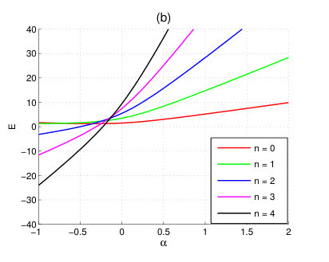
<figcaption class="paper-figure-caption"><b>Fig 1.</b> Figure 1. (Colour online) Evolution of energy levels as a function of the deformation parameter 𝛼: (a) linear deformation; (b) quadratic deformation.</figcaption>
</figure>
<figure class="paper-figure-card">
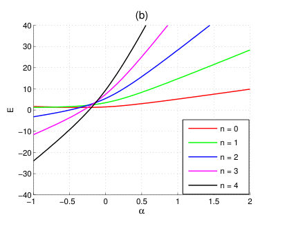
<figcaption class="paper-figure-caption"><b>Fig 2.</b> Figure 2 illustrates the thermodynamic properties of the system subjected to linear deformation. The internal energy (𝑈) exhibits a monotonous growth with temperature. This increase becomes more pronounced as the deformation parameter 𝛼increases, reflecting an increase in the number of accessible energy states at high temperatures. Simultaneously, the free energy (𝐹) decreases with increasing temper- ature, which is characteristic of a thermally excited system. The effect of the deformation is manifested by a change in the slope of this decrease, highlighting the influence of 𝛼on the thermodynamic potential of the system. The modification of the density of states 𝜌(𝐸) = |d𝑛/d𝐸| induced by...</figcaption>
</figure>
<figure class="paper-figure-card">
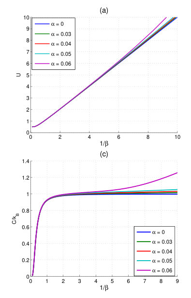
<figcaption class="paper-figure-caption"><b>Fig 3.</b> Figure 2. (Colour online) Thermodynamic properties as a function of temperature for different values of 𝛼(case of linear deformation).</figcaption>
</figure>
<figure class="paper-figure-card">
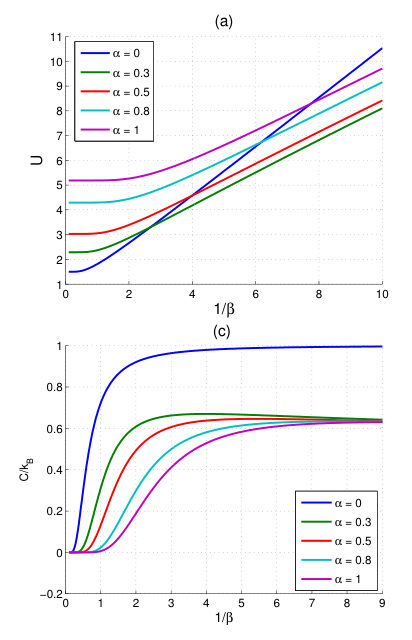
<figcaption class="paper-figure-caption"><b>Fig 4.</b> Figure 3. (Colour online) Thermodynamic properties as a function of temperature for different values of 𝛼(case of quadratic deformation).</figcaption>
</figure>
</div>

<p><strong>Summary.</strong> The paper develops a rigorous method using the Generalized Extended Momentum Operator (GEMO) formalism to study quantum systems under geometric deformations. It analytically solves the energy spectrum and provides the first complete thermodynamic characterization by calculating the partition function. The key finding is that the type of deformation dictates unique thermal responses, allowing for the engineering of quantum heat capacity in nanostructures.</p>
<p><strong>Why it may be interesting.</strong> This work provides a powerful theoretical tool linking geometric structure (via momentum deformation) directly to measurable macroscopic quantum thermodynamic properties, which is highly relevant for designing novel quantum materials.</p>
<details>
<summary>Detailed structure</summary>
<p><strong>Main problem.</strong> To establish a rigorous framework for quantum systems with geometric deformations by constructing a strictly self-adjoint deformed momentum operator.</p>
<p><strong>Main result.</strong> The study predicts distinct thermal signatures: linear deformation causes a divergent heat capacity peak, while quadratic deformation leads to a saturation of $C/k_B 	o 0.6$ below the Dulong–Petit limit.</p>
<p><strong>Method.</strong> The authors use the Generalized Extended Momentum Operator (GEMO) formalism combined with an extended Supersymmetric Quantum Mechanics (SUSYQM) factorization scheme for spectral analysis, and employ the Euler–Maclaurin approximation for thermodynamic characterization.</p>
<p><strong>Model / system.</strong> The system is a one-dimensional quantum oscillator subjected to geometric deformations modeled by $\mu(x)$, analyzed in linear ($\mu(x)=\alpha x$) and quadratic ($\mu(x)=\alpha x^2$) cases. The Hamiltonian is derived from substituting the GEMO operator into the standard form.</p>
<p><strong>Key observables.</strong> Energy spectra ($E_n$), Density of states ($
ho(E)$), Internal energy ($U$), Entropy ($S$), and Heat Capacity ($C$).</p>
<p><strong>Important parameters / regimes.</strong> Deformation parameter $\alpha$, Temperature ($eta$ or $1/T$), and the effective curvature induced by $\mu(x)$.</p>
<p><strong>Assumptions / limitations.</strong> The method assumes geometric deformation can be modeled by $\mu(x)$ (linear or quadratic), and it relies on the Euler–Maclaurin approximation for calculating the partition function.</p>
<p><strong>Figures summary.</strong> Figures illustrate the evolution of energy levels ($E_n$) versus the deformation parameter $\alpha$ for both linear and quadratic cases, alongside plots showing thermodynamic quantities like heat capacity vs. inverse temperature ($eta$).</p>
<p><strong>Paper structure.</strong> The paper first develops the self-adjoint framework using GEMO/SUSYQM to find exact spectra for deformed Hamiltonians. It then calculates the partition function $Z(eta)$ and derives all key thermodynamic observables, comparing the distinct thermal responses of linear versus quadratic deformations.</p>
</details>
<details>
<summary>Abstract</summary>
<p>We establish a rigorous framework for quantum systems with geometric deformations by constructing a strictly self-adjoint deformed momentum operator through the generalized extended momentum operator (GEMO) formalism. Unlike previous approaches relying on boundary-condition hermiticity, our method ensures intrinsic self-adjointness for both linear ($μ(x)=αx$) and quadratic ($μ(x)=αx^{2}$) deformations within a unified non-Hermitian supersymmetric factorization scheme. This yields exact analytical spectra while revealing hidden $\mathfrak{su}(1,1)$ symmetry structures. Crucially, we provide the first complete thermodynamic characterization of such systems by analytically evaluating the partition function via the Euler--Maclaurin approximation. Geometric deformation fundamentally reshapes the density of states $ρ(E)$, producing distinct thermal signatures: a divergent heat capacity peak for linear deformation due to state accumulation near a maximal energy, and a saturation $C/k_{\mathrm{B}}\to 0.6$ (below the Dulong--Petit limit) for quadratic deformation. These results establish geometric deformation as a tunable parameter for engineering quantum thermodynamic responses in curved nanostructures.</p>
</details>
<p><sub><a href="#top">↑ back to top</a></sub></p>

<p><a id="paper-2606.21794"></a></p>
<h3 id="first-quantized-relativistic-quantum-simulation-with-periodic-and-dirichlet-boundary-conditions"><a href="http://arxiv.org/abs/2606.21794v1">First-Quantized Relativistic Quantum Simulation with Periodic and Dirichlet Boundary Conditions</a></h3>
<p><strong>Authors:</strong> Jeongho Bang, Timothy P. Spiller, Kyunghyun Baek, Kyoungho Cho, Jaewoo Joo<br>
<strong>Type:</strong> theory · <strong>Category:</strong> quantum information and computing · <strong>PDF:</strong> <a href="https://arxiv.org/pdf/2606.21794v1">https://arxiv.org/pdf/2606.21794v1</a><br>
<strong>Analysis basis:</strong> full PDF text, analyzed in chunks
<strong>Topic relevance:</strong> <code>Frenkel-Kontorova</code> <strong>1/5</strong> · <code>analog quantum simulation</code> <strong>1/5</strong></p>
<div class="figure-strip-hint">↔ Scroll figures horizontally</div>
<div class="paper-figures-scroll">
<figure class="paper-figure-card">
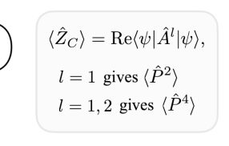
<figcaption class="paper-figure-caption"><b>Fig 1.</b> Figure 1. Quantum circuit of the translation-moment estimator. A Hadamard-test-type circuit estimates the real part of a translation moment, ml = Re⟨ˆAl⟩. The moment l = 1 is sufficient for the non-relativistic kinetic term, while the leading relativistic correction requires l = 1, 2.</figcaption>
</figure>
<figure class="paper-figure-card">
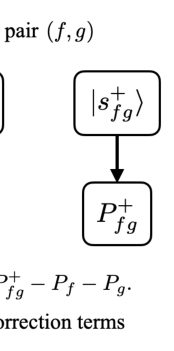
<figcaption class="paper-figure-caption"><b>Fig 2.</b> Figure 2. Schematic for the boundary-overlap estimator. DBC introduces boundary-local coherences. For a boundary pair (f, g), the probabilities associated with |f⟩, |g⟩, and the normalised superposition |s+ fg⟩= (|f⟩+ |g⟩)/ √</figcaption>
</figure>
<figure class="paper-figure-card">
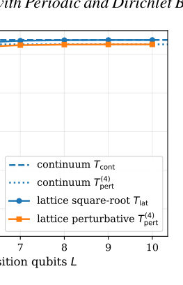
<figcaption class="paper-figure-caption"><b>Fig 3.</b> Figure 3. PBC free-particle benchmark. The continuum relativistic energy Tcont is compared with the exact square-root lattice energy Tlat and the perturbative lattice energy T (4) pert for the Fourier mode n = 1. Here, R = 10 and c = 2. The convergence of Tlat isolates the finite- grid discretization error, while the residual separation between T (4) pert and Tcont reflects the relativistic truncation error.</figcaption>
</figure>
<figure class="paper-figure-card">
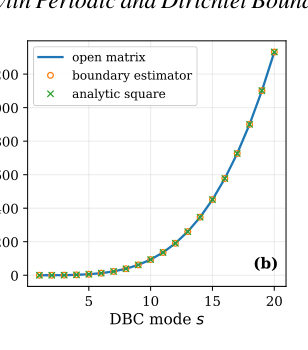
<figcaption class="paper-figure-caption"><b>Fig 4.</b> Figure 4. DBC infinite-square-well benchmark. Here, we choose N = 64 interior grid points and R = 10. (a) We compare ⟨ˆP 2 D⟩obtained from the open-chain matrix evaluation, the boundary-corrected cyclic estimator, and the analytic sine spectrum. (b) We make the same comparison for ⟨ˆP 4 D⟩= ⟨( ˆP 2 D)2⟩. The overlapping curves verify that the boundary-correction terms reconstruct the DBC finite-difference operator at the estimator level.</figcaption>
</figure>
<figure class="paper-figure-card">
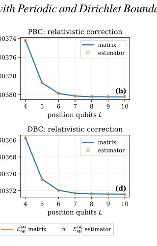
<figcaption class="paper-figure-caption"><b>Fig 5.</b> Figure 5. Smooth-potential benchmark. The graphs (a) and (b) show the PBC results for the periodic potential in Eq. (68). The graphs (c) and (d) show the DBC results for the confining potential in Eq. (69). The total non-relativistic energy Enr, the perturbatively corrected energy E(4) rel , and the relativistic correction ∆Erel are plotted as functions of the number of position qubits L. The solid lines denote direct matrix evaluation, while the open markers denote the translation-plus-boundary estimator reconstruction.</figcaption>
</figure>
</div>

<p><strong>Summary.</strong> The paper presents a comprehensive methodology for simulating first-quantized relativistic quantum mechanics on 1D lattices using quantum circuits. It successfully derives measurement estimators for kinetic energy under both Periodic and Dirichlet boundary conditions, validating its accuracy against exact diagonalization across multiple physical benchmarks.</p>
<p><strong>Why it may be interesting.</strong> This work provides a rigorous quantum algorithm framework to simulate relativistic effects in condensed matter models (like lattice fermions) by accurately handling the complex boundary physics inherent in both periodic and open systems on quantum hardware.</p>
<details>
<summary>Detailed structure</summary>
<p><strong>Main problem.</strong> The work develops a methodology for simulating first-quantized relativistic quantum mechanics on finite 1D lattices under both Periodic (PBC) and Dirichlet (DBC) boundary conditions.</p>
<p><strong>Main result.</strong> The framework successfully constructs boundary-consistent lattice Hamiltonians incorporating leading relativistic corrections ($\propto \hat{P}^4$) and validates the energy estimation workflow against direct matrix diagonalization for various benchmarks.</p>
<p><strong>Method.</strong> Energy expectation values are estimated using quantum circuit measurements of momentum moments (e.g., translation moments $\langle\hat{A}^\ell
angle$ for PBC, or boundary-local terms for DBC) combined with position-basis sampling for potentials.</p>
<p><strong>Model / system.</strong> The system is a single positive-energy particle confined to a 1D finite domain simulated via lattice Hamiltonians. The Hamiltonian includes kinetic energy derived from the relativistic operator expanded to second order in momentum ($\hat{T} \propto \hat{P}^2 - \hat{P}^4/c^2$) and an arbitrary potential $\hat{V}$.</p>
<p><strong>Key observables.</strong> Energy expectation values $\langle\hat{H}
angle$, momentum moments $\langle\hat{P}^2
angle$ and $\langle\hat{P}^4
angle$, and the relative discrepancy between estimator reconstruction and direct matrix evaluation.</p>
<p><strong>Important parameters / regimes.</strong> Weakly relativistic regime ($\eta_	au = \langle\hat{P}^2_	au
angle / m^2c^2$ must be small); lattice size $L$; finite shot count $M$.</p>
<p><strong>Assumptions / limitations.</strong> The simulation relies on a weak-relativistic perturbative expansion of the kinetic operator, and measurement errors are assumed to scale as $O(M^{-1/2})$ for kinetic terms.</p>
<p><strong>Figures summary.</strong> Figures compare energy estimates from direct matrix evaluation versus estimator reconstruction for both PBC and DBC benchmarks; another figure shows the Root Mean Square Error (RMSE) scaling confirming the expected $M^{-1/2}$ shot-noise behavior.</p>
<p><strong>Paper structure.</strong> The paper details the derivation of boundary-consistent lattice Hamiltonians ($\hat{H}_{	ext{tot},	au}$) for both PBC and DBC, outlines specialized measurement estimators using translation moments and boundary corrections, and validates this workflow across free particle, infinite square well, and smooth potential benchmarks.</p>
</details>
<details>
<summary>Abstract</summary>
<p>In this work, we present a methodology for first-quantized relativistic quantum simulation on one-dimensional finite domains under the two boundary conditions most commonly used in lattice models: periodic boundary conditions (PBC) and Dirichlet boundary conditions (DBC). Starting from the positive-energy relativistic kinetic operator, we construct weakly relativistic lattice Hamiltonians whose leading correction requires the boundary-consistent discretized momentum moments $\langle \hat{P}^{2}\rangle$ and $\langle \hat{P}^{4}\rangle$. These moments are reconstructed in the PBC Hamiltonian from moments of a unitary cyclic translation while the DBC Hamiltonian uses the open-chain finite-difference. In a qubit-register implementation, it can be evaluated as the corresponding cyclic translation estimator plus boundary-local terms that remove the unphysical wrap-around link. The resulting energy-estimation workflow uses translation measurements for the kinetic terms, a small number of endpoints and near-endpoints overlap probabilities for DBC, and position-basis sampling for diagonal potentials. We valdate the framework of the relativistic quantum simulation in various benchmark potentials such as no potential and a cosine potential for PBC as well as an infinite square well and a harmonic potential for DBC, with finite-shot sampling tests. These benchmarks show good agreement between the estimator reconstruction and direct matrix evaluation while separating the finite-grid discretization, weak-relativistic truncation, and measurement errors.</p>
</details>
<p><sub><a href="#top">↑ back to top</a></sub></p>

<p><a id="paper-2606.21664"></a></p>
<h3 id="no-signaling-values-of-quantum-games-an-operator-algebra-perspective"><a href="http://arxiv.org/abs/2606.21664v1">No-signaling values of quantum games--an operator algebra perspective</a></h3>
<p><strong>Authors:</strong> Roy Araiza, Marius Junge, Carlos Palazuelos<br>
<strong>Type:</strong> theory · <strong>Category:</strong> other · <strong>PDF:</strong> <a href="https://arxiv.org/pdf/2606.21664v1">https://arxiv.org/pdf/2606.21664v1</a><br>
<strong>Analysis basis:</strong> full PDF text, analyzed in chunks
<strong>Topic relevance:</strong> <code>Keldysh / 2PI / non-Gaussian methods</code> <strong>1/5</strong> · <code>entanglement &amp; information structure</code> <strong>1/5</strong></p>
<div class="figure-strip-hint">↔ Scroll figures horizontally</div>
<div class="paper-figures-scroll">
<figure class="paper-figure-card">
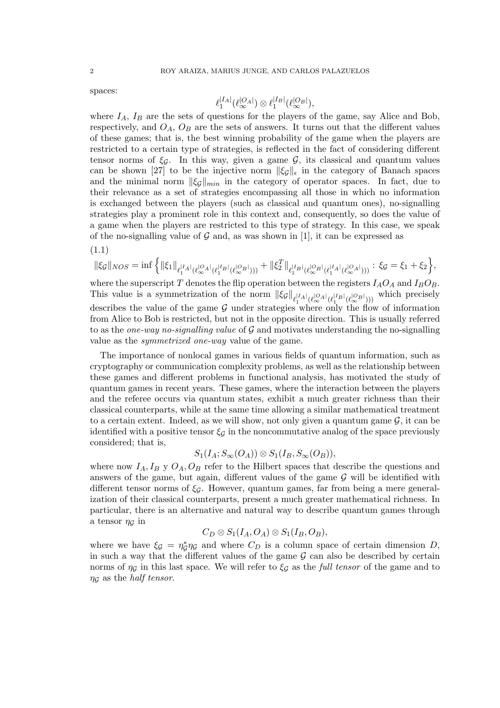
<figcaption class="paper-figure-caption"><b>Fig 1.</b> Low-resolution page preview, page 2</figcaption>
</figure>
<figure class="paper-figure-card">
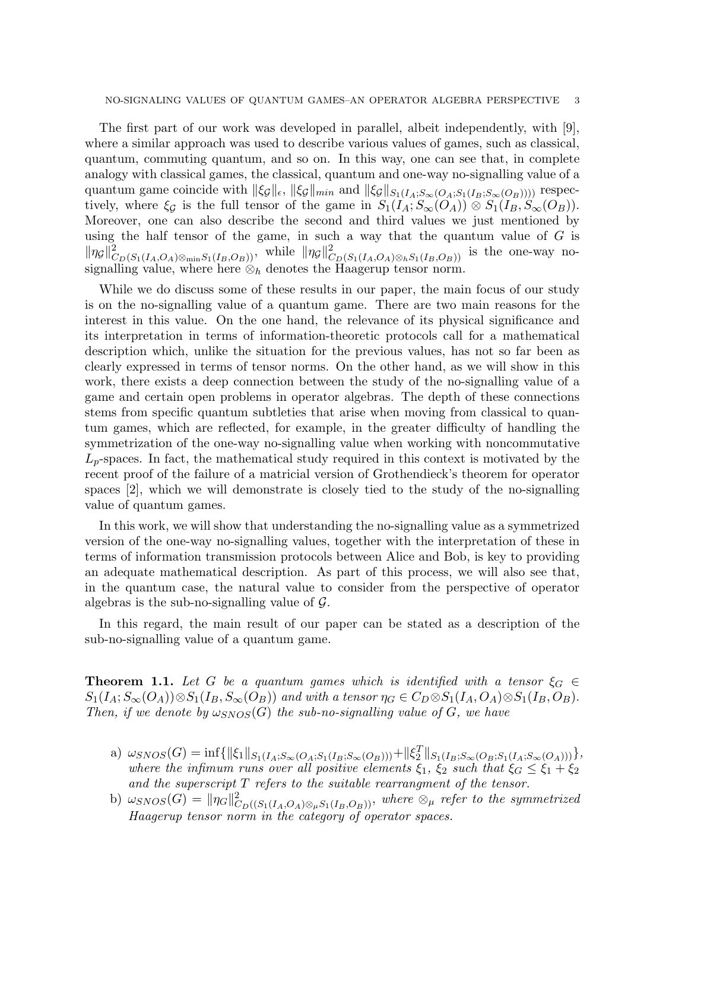
<figcaption class="paper-figure-caption"><b>Fig 2.</b> Low-resolution page preview, page 3</figcaption>
</figure>
<figure class="paper-figure-card">
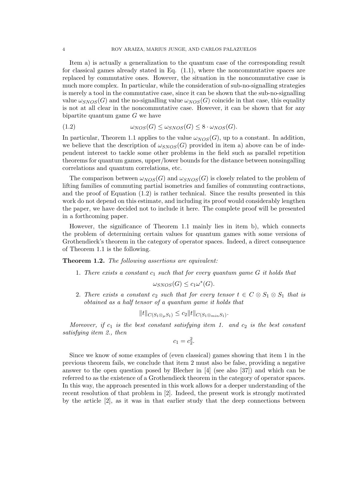
<figcaption class="paper-figure-caption"><b>Fig 3.</b> Low-resolution page preview, page 4</figcaption>
</figure>
<figure class="paper-figure-card">
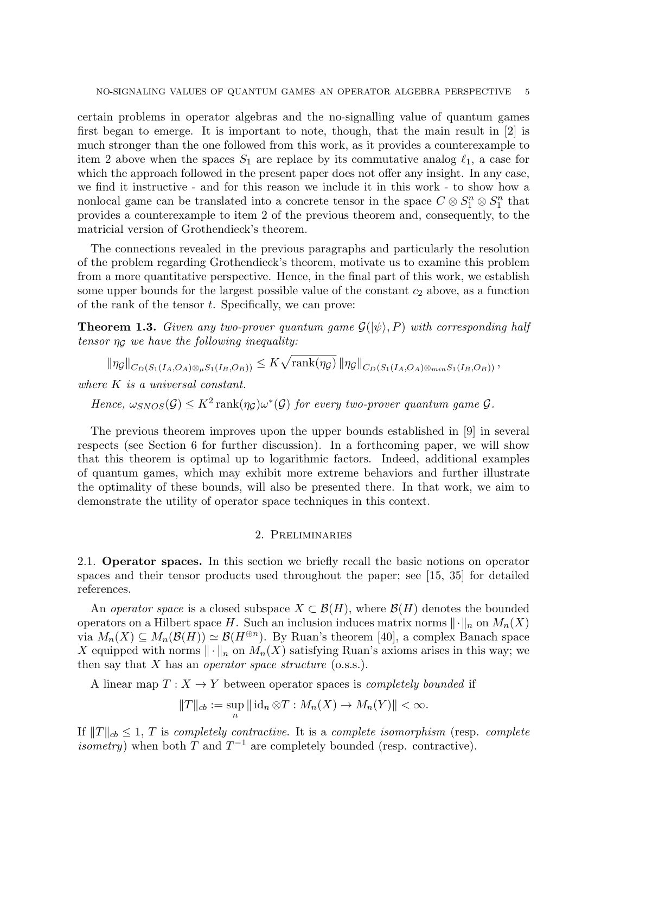
<figcaption class="paper-figure-caption"><b>Fig 4.</b> Low-resolution page preview, page 5</figcaption>
</figure>
<figure class="paper-figure-card">
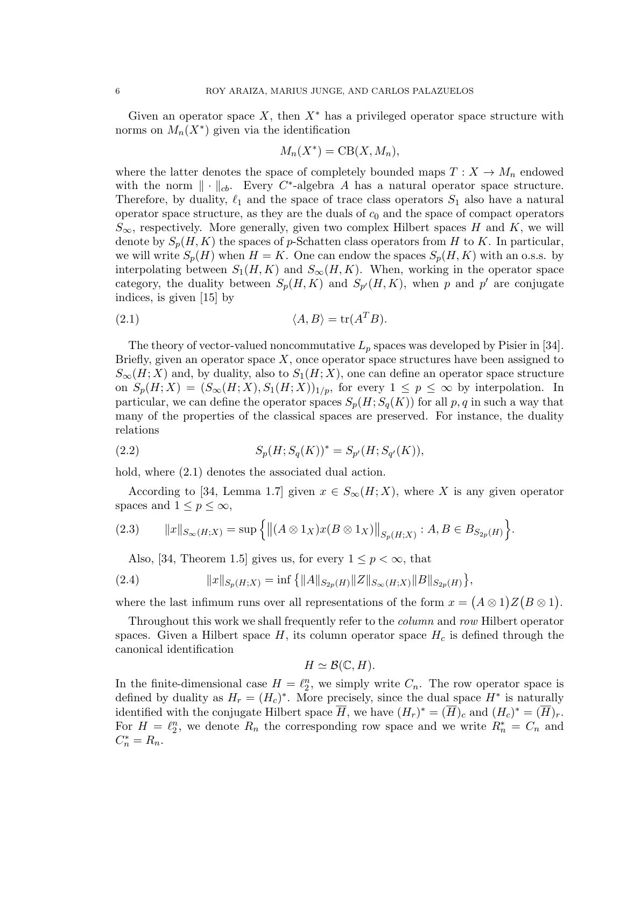
<figcaption class="paper-figure-caption"><b>Fig 5.</b> Low-resolution page preview, page 6</figcaption>
</figure>
</div>

<p><strong>Summary.</strong> This paper provides a deep operator algebraic characterization of 'no-signalling' constraints in two-prover quantum games. It defines and relates several quantitative measures ($\omega_{NOS}$ and $\omega_{SNOS}$) using sophisticated tensor norms from functional analysis. The results connect quantum information theory directly to unsolved problems in the structure theory of operator algebras.</p>
<p><strong>Why it may be interesting.</strong> This work is highly theoretical but relevant to open questions in quantum information theory, particularly concerning the fundamental limitations imposed by causality (no-signaling) when quantifying correlations in multipartite quantum systems.</p>
<details>
<summary>Detailed structure</summary>
<p><strong>Main problem.</strong> The work aims to rigorously characterize the 'no-signalling value' ($\omega_{NOS}(G)$) of two-prover quantum games by reformulating these concepts using advanced tools from operator space theory and tensor norms.</p>
<p><strong>Main result.</strong> The authors establish deep connections between $\omega_{NOS}(G)$ and a related sub-no-signalling value ($\omega_{SNOS}(G)$), proving bounds like $\omega_{NOS}(G) \le \omega_{SNOS}(G) \le 8 \cdot \omega_{NOS}(G)$, while also connecting these values to open problems in operator algebras.</p>
<p><strong>Method.</strong> The methodology heavily relies on functional analysis, specifically utilizing various tensor norms (e.g., $\min$, $\mu$) within the framework of operator spaces and analyzing completely positive trace-preserving maps via their Choi matrices.</p>
<p><strong>Model / system.</strong> The model is abstract: two-prover quantum games ($G$), which are mathematically analyzed using tensors defined over state spaces ($\mathcal{S}_1(\cdot)$) associated with input and output systems for the players (Alice and Bob).</p>
<p><strong>Key observables.</strong> No-signalling value ($\omega_{NOS}(G)$), sub-no-signalling value ($\omega_{SNOS}(G)$), and various tensor norms quantifying game values.</p>
<p><strong>Important parameters / regimes.</strong> The analysis involves comparing constants derived from different norm estimates, such as $c_1$ and $c_2$, and the rank of associated tensors ($   ext{rank}(\eta_G)$).</p>
<p><strong>Assumptions / limitations.</strong> The derivation relies on advanced theorems regarding operator spaces (e.g., Pisier's results) and specific structural assumptions about how quantum strategies map between input/output systems.</p>
<p><strong>Paper structure.</strong> The paper progresses by first defining game values using tensor norms, then establishing equivalences between different types of quantum strategies (e.g., one-way vs. no-signalling), and finally deriving quantitative bounds relating the various defined 'no-signalling' measures.</p>
</details>
<details>
<summary>Abstract</summary>
<p>The aim of this work is to study two-prover quantum games (i.e., games with quantum inputs and outputs) from an operator-algebraic and operator-space point of view. We characterize several notions of the value of such games by formulating them in terms of tensor norms in the category of operator spaces. The main results of the paper concern the description of the so-called no-signalling value of these games, for which we not only provide a precise operator-space formulation, but also establish close connections between this study and some problems in operator algebras. In particular, we show how the recent counterexample to Grothendieck's theorem for operator spaces given in \cite{Ara} can be understood as a direct consequence of results in quantum information theory. We also obtain new upper bounds on the gap between the no-signalling value and the quantum value of two-prover quantum games, improving the best previously known estimates.</p>
</details>
<p><sub><a href="#top">↑ back to top</a></sub></p>

<p><a id="paper-2606.22212"></a></p>
<h3 id="probing-the-weak-driving-quantum-speed-limit-via-drift-aware-shooting-methods"><a href="http://arxiv.org/abs/2606.22212v1">Probing the Weak-Driving Quantum Speed Limit via Drift-Aware Shooting Methods</a></h3>
<p><strong>Authors:</strong> Denis Janković, Saba Taherpour, Paul-Louis Etienney, Paul-Antoine Hervieux, Christoph Wolf<br>
<strong>Type:</strong> theory · <strong>Category:</strong> quantum information and computing · <strong>PDF:</strong> <a href="https://arxiv.org/pdf/2606.22212v1">https://arxiv.org/pdf/2606.22212v1</a><br>
<strong>Analysis basis:</strong> full PDF text, analyzed in chunks
<strong>Topic relevance:</strong> <code>exotic spin models in light-matter</code> <strong>1/5</strong> · <code>spintronics-quantum-optics interface</code> <strong>1/5</strong></p>
<div class="figure-strip-hint">↔ Scroll figures horizontally</div>
<div class="paper-figures-scroll">
<figure class="paper-figure-card">
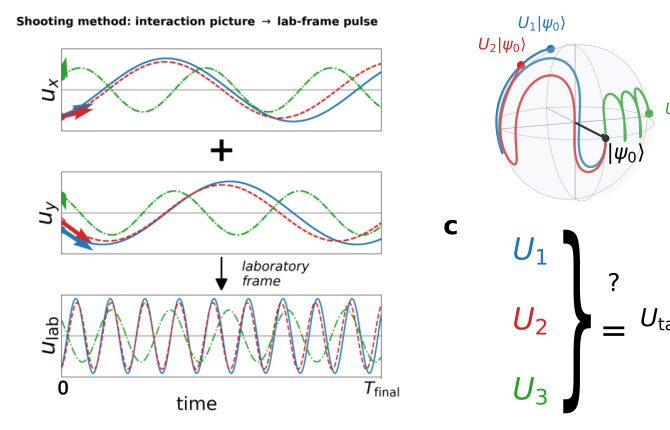
<figcaption class="paper-figure-caption"><b>Fig 1.</b> FIG. 1. The shooting (MAGICARP) construction illustrated for a single qubit. (a) A</figcaption>
</figure>
<figure class="paper-figure-card">
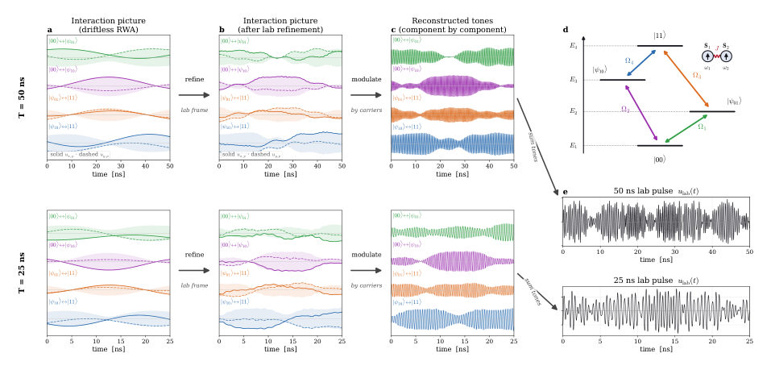
<figcaption class="paper-figure-caption"><b>Fig 2.</b> FIG. 2. Drift-aware dressed-transition shooting workflow, shown for the dressed two-qubit</figcaption>
</figure>
<figure class="paper-figure-card">
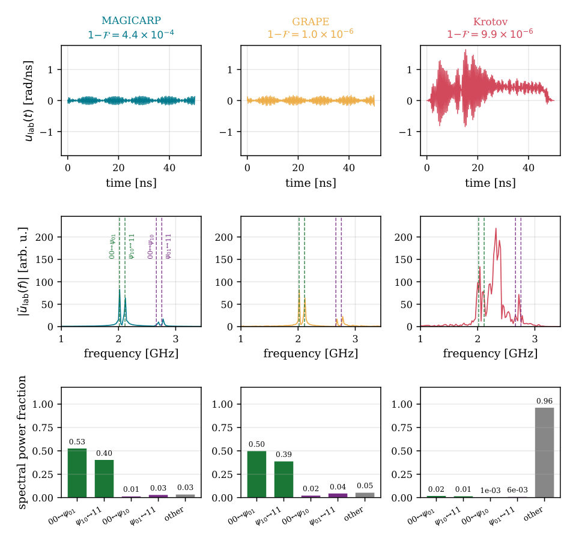
<figcaption class="paper-figure-caption"><b>Fig 3.</b> FIG. 3. Anatomy of the NOT2 pulses at moderate exchange, T = 50 ns, fair 10−5 halt. Columns:</figcaption>
</figure>
<figure class="paper-figure-card">
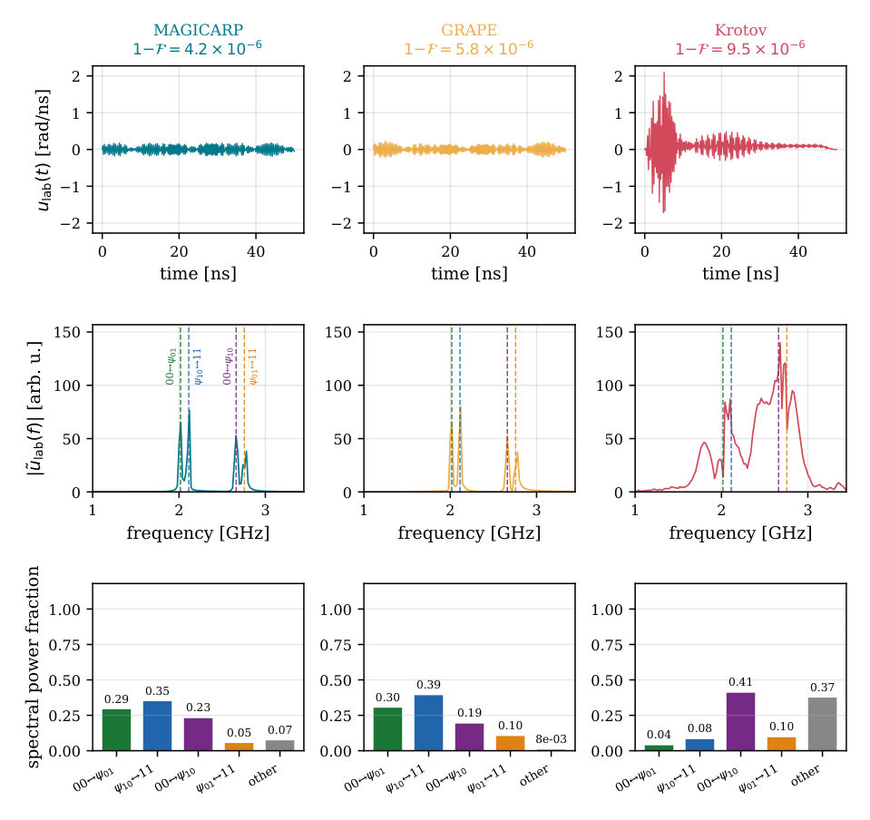
<figcaption class="paper-figure-caption"><b>Fig 4.</b> FIG. 4. Same anatomy for the dressed QFT at T = 50 ns, fair 10−5 halt. Because the QFT is</figcaption>
</figure>
<figure class="paper-figure-card">
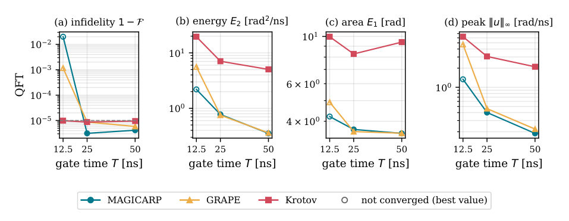
<figcaption class="paper-figure-caption"><b>Fig 5.</b> FIG. 5. Fair-halting comparison at the verified 10−5 halt for the dressed QFT: (a) verified infidelity</figcaption>
</figure>
</div>

<p><strong>Summary.</strong> The paper introduces MAGICARP, an advanced shooting method for quantum optimal control that efficiently generates smooth, low-energy pulses by accounting for a background drift Hamiltonian. By benchmarking against established methods like GRAPE and Krotov, the authors demonstrate superior energy efficiency and spectral selectivity. Crucially, they use this framework to map out the weak-driving Quantum Speed Limit for two-qubit gates.</p>
<p><strong>Why it may be interesting.</strong> This work provides a significant methodological advancement in optimal control by explicitly incorporating structural constraints (the drift Hamiltonian) and physical realizability metrics (spectral purity, low energy). The rigorous mapping of the QSL is highly relevant for designing next-generation quantum hardware protocols.</p>
<details>
<summary>Detailed structure</summary>
<p><strong>Main problem.</strong> The core challenge is achieving high-fidelity, low-energy quantum control pulses for implementing target unitary gates in the presence of a constant background Hamiltonian (drift).</p>
<p><strong>Main result.</strong> The proposed MAGICARP method consistently achieves lower energy and spectral purity compared to Krotov's or GRAPE methods at matched gate infidelity. Furthermore, the work successfully maps out the weak-driving quantum speed limit for two-qubit gates.</p>
<p><strong>Method.</strong> The authors employ a drift-aware shooting method (MAGICARP) inspired by Pontryagin's maximum principle, utilizing a two-stage optimization workflow: initial RWA optimization in a dressed basis followed by exact laboratory-frame refinement.</p>
<p><strong>Model / system.</strong> The system is modeled as a closed quantum system governed by $H(t) = H_0 + \sum u_k(t)H_k$, specifically applied to two exchange-coupled electron spins (qubits). The target operation requires accounting for the drift Hamiltonian $H_0$ via an effective target unitary $U_{	ext{target}} = U_{	ext{gate}} e^{-iH_0T}$.</p>
<p><strong>Key observables.</strong> Gate infidelity ($1-F$), integrated pulse energy ($E_2$), conserved pulse area ($E_1$), spectral weight distribution (gate-essential vs. spectator transitions), and the minimum control energy $E_{	ext{law}}^2(T)$.</p>
<p><strong>Important parameters / regimes.</strong> The analysis focuses on the weak-driving regime, characterized by a critical gate time threshold $T^*$ where low-amplitude solutions cease to exist.</p>
<p><strong>Assumptions / limitations.</strong> The comparison relies on a 'fair-halting benchmark' protocol to ensure that different optimization algorithms are compared at equivalent levels of achieved fidelity and effort.</p>
<p><strong>Figures summary.</strong> Figures compare the spectral anatomy of optimized pulses (MAGICARP, GRAPE, Krotov) for NOT2 and QFT gates, showing MAGICARP/GRAPE achieving spectrally clean, minimal-energy solutions while Krotov is broadband. Plots also illustrate the energy scaling near the quantum speed limit.</p>
<p><strong>Paper structure.</strong> The paper first establishes the drift-aware control framework using a two-stage shooting method (MAGICARP). It then benchmarks this against GRAPE and Krotov methods across multiple gates (NOT2, QFT) at matched infidelity. Finally, it performs extensive statistical sweeps to map out the weak-driving quantum speed limit, deriving an area-pole law for minimum energy.</p>
</details>
<details>
<summary>Abstract</summary>
<p>A central goal of quantum optimal control is to achieve high-fidelity and low-energy control pulses. When quantum optimal control methods optimize every point of a pulse discretized over small time steps independently this can yield high fidelity control but also results in broadband and energy-hungry waveforms. We extend MAGICARP -- a shooting method inspired by Pontryagin's maximum principle on energy that generates an entire pulse from a small set of parameters, making it smooth and energy-efficient by construction -- from driftless systems to closed systems with the constant drift Hamiltonian of two exchange-coupled spins in an external magnetic field. The optimization proceeds in stages: the dressed states of the drift Hamiltonian structure the target, an initial shooting optimization is performed in the rotating-wave frame, and an exact laboratory-frame refinement follows. Benchmarked against Krotov and GRAPE at matched gate infidelity, MAGICARP consistently achieves the lowest energy and a conserved pulse area, concentrates its spectral weight on the gate-relevant transitions, and is the most robust to fluctuations in the exchange coupling; GRAPE independently converges to essentially the same pulse, while Krotov's method pays an order-of-magnitude energy premium. Moreover, a large statistical survey of unselected optimization runs resolves a weak-driving quantum speed limit for two exchange-coupled electron spins: low-amplitude realizations of the two-qubit quantum Fourier transform cease to exist below a critical gate time $T^*$ set by the drift's interaction rate, and the minimum control energy diverges on approach to this limit. The divergence obeys a simple two-parameter area-pole law, $E_2^{\mathrm{law}}(T)=A/T+B/(T-T^*)$, whose first term is the time-optimal area cost and whose second term is a pole at the speed limit.</p>
</details>
<p><sub><a href="#top">↑ back to top</a></sub></p>

<p><a id="paper-2606.21694"></a></p>
<h3 id="quantum-oscillations-and-dirac-dispersion-in-tunable-kagome-lattice-lumath1350mathymath1351mathnbmath1352mathtamath1353mathmath1354mathsnmath1355math"><a href="http://arxiv.org/abs/2606.21694v1">Quantum oscillations and Dirac dispersion in tunable kagome lattice Lu$_{1-y}$Y$_y$(Nb$_{1-x}$Ta$_x$)$_6$Sn$_6$</a></h3>
<p><strong>Authors:</strong> Keenan Avers, Phineas Sobel, Lochlan Joyce, Jared Dans, Prathum Saraf, Ram Kumar, Shanta Saha, Peter Zavalij, Johnpierre Paglione<br>
<strong>Type:</strong> experiment · <strong>Category:</strong> strongly correlated electrons · <strong>PDF:</strong> <a href="https://arxiv.org/pdf/2606.21694v1">https://arxiv.org/pdf/2606.21694v1</a><br>
<strong>Analysis basis:</strong> full PDF text, analyzed in chunks
<strong>Topic relevance:</strong> <code>Kondo &amp; dissipative impurity</code> <strong>1/5</strong> · <code>analog quantum simulation</code> <strong>1/5</strong></p>
<div class="figure-strip-hint">↔ Scroll figures horizontally</div>
<div class="paper-figures-scroll">
<figure class="paper-figure-card">
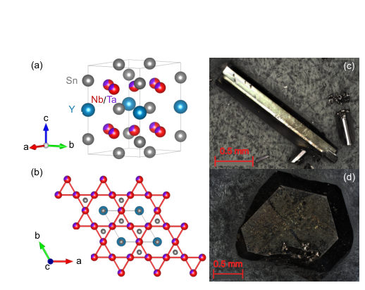
<figcaption class="paper-figure-caption"><b>Fig 1.</b> FIG. 1. (a) The unit cell of Y(Nb1−xTax)6Sn6 that shows the triangular Y layers sandwiched between kagome Nb/Ta held together by a Sn framework. (b) Down c-axis view of extended crystal structure emphasizing the corner sharing motif of the kagome Nb/Ta sites. (c) Single crystal hexagonal needle of the 30 % Ta batch. (d) Single crystal hexagonal plate of the 1 % Ta batch that demonstrates Ta alloying affects growth morphology.</figcaption>
</figure>
<figure class="paper-figure-card">
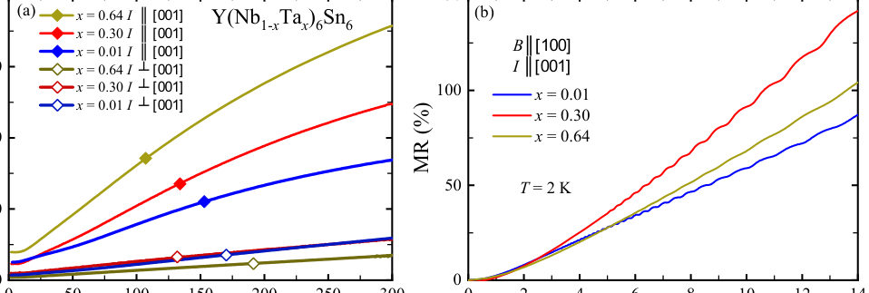
<figcaption class="paper-figure-caption"><b>Fig 2.</b> FIG. 2. (a) Electrical resistivity (ρ) of Y(Nb1−xTax)6Sn6 crystals for current (I) along the c-axis (I ∥[001]) and perpendicular to the c-axis (I ⊥[001]) for the x = 0.01, x = 0.30, and x = 0.64 batches. The observation that Y(Nb1−xTax)6Sn6 has smaller ρ for I ⊥[001] compared to I ∥[001] points to a reasonably large anisotropy. (b) The transverse magnetoresistance (MR) vs. magnetic field (B) for B ∥[100] and I ∥[001] at T = 2 K showing large MR response and low frequency Shubnikov-de Haas (SdH) quantum oscillations demonstrate high sample quality. The relatively moderate effect of Ta substitution on transport demonstrates minimal signatures of alloy disorder in both (a) and (b).</figcaption>
</figure>
<figure class="paper-figure-card">
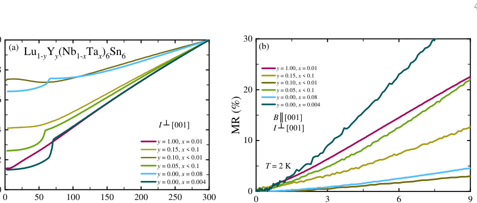
<figcaption class="paper-figure-caption"><b>Fig 3.</b> FIG. 3. (a) Normalized resistivity of Lu1−yYy(Nb1−xTax)6Sn6 for I ⊥[001]. The Y-rich end at y = 1.00 exhibits good sample quality with minimal leveling off below ∼10 K, while samples with higher Lu concentration (e.g. y ≤0.15) show a consistent trend towards larger overall resistance ratio. Signatures of a charge density wave (CDW) emerge at y = 0.10 and evolve from a local minimum towards a kink feature by y = 0.00. (b) Magnetoresistance (MR) at T = 2 K demonstrates a degree of consistency with Kohler’s rule with the Y-rich samples having overall greater MR percentages, which suggests the increase in ρ is due to disorder, although we emphasize that the y = 0.00, x = 0.004 batch...</figcaption>
</figure>
<figure class="paper-figure-card">
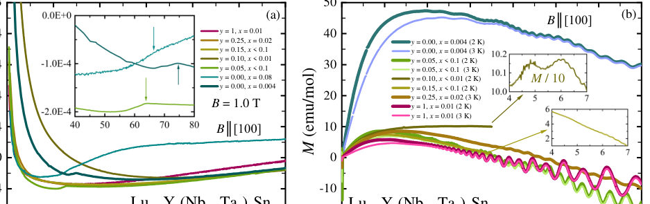
<figcaption class="paper-figure-caption"><b>Fig 4.</b> FIG. 4. (a) Magnetic susceptibility (M/H) of various y and x batches of Lu1−yYy(Nb1−xTax)6Sn6 single crystals measured in an applied field of 1.0 T applied along the [100] direction. The inset emphasizes the onset of the CDW inflection points in the Lu-rich batches. With the exception of the lower quality y = 0.00, x = 0.08 sample, all the materials are diamagnetic at 300 K, but become paramagnetic at low temperatures and fields. (b) Field dependence of magnetization (M) further demonstrates a mixture of paramagnetic and diamagnetic responses. The observation of de Hass-Van Alphen oscillations are consistent with quantum oscillations observed in resistivity (see text). The insets emphasize...</figcaption>
</figure>
<figure class="paper-figure-card">
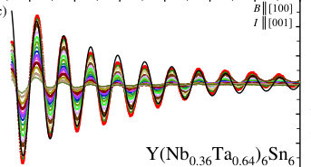
<figcaption class="paper-figure-caption"><b>Fig 5.</b> FIG. 5. Shubnikov-de Haas (SdH) oscillations of three sam- ples of Y(Nb1−xTax)6Sn6, extracted by plotting background- subtracted magnetoresistance ∆R (see text for details) vs in- verse magnetic field, for (a) x = 0.01, (b) x = 0.30, and (c) x = 0.64. Data fits to the Lifshitz–Kosevich formalism (see text and Table II) are shown for 2 K data (black curves). Two different frequencies, α and β, are resolvable for the x = 0.01 sample, but only the α orbit is observable for the x = 0.30 and x = 0.64 samples. A non-zero Berry phase (ϕB) manifests for all the orbits, which is consistent with a Fermi surface derived from topologically non-trivial linearly dispersing Dirac bands.</figcaption>
</figure>
</div>

<p><strong>Summary.</strong> This work reports on the synthesis and characterization of tunable kagome lattice compounds ($ ext{Lu}<em 1-x>{1-y}   ext{Y}_y(   ext{Nb}</em>_6$). By measuring quantum oscillations, the researchers map out how alloying tunes the Fermi surface topology and tracks its evolution relative to a competing Charge Density Wave (CDW) order. This demonstrates fine control over novel electronic states in correlated materials.}   ext{Ta}_x)_6    ext{Sn</p>
<p><strong>Why it may be interesting.</strong> While focused on solid-state physics, the ability to tune electronic band structure (Dirac points) via chemical substitution provides a model for engineering topological states, which is relevant to understanding emergent quantum phenomena in strongly correlated systems.</p>
<details>
<summary>Detailed structure</summary>
<p><strong>Main problem.</strong> The study investigates quantum oscillations and Dirac dispersion in a tunable kagome lattice system to understand its rich electronic properties.</p>
<p><strong>Main result.</strong> The research reveals that the Fermi surface size and effective mass evolve systematically across the alloy series, suggesting a transition towards or proximity to Dirac-like band dispersion. The interplay between this electronic structure and Charge Density Wave (CDW) order is mapped out.</p>
<p><strong>Method.</strong> The authors employed single crystal growth of double-alloyed compounds and characterized them using electrical transport measurements (magnetoresistance) and magnetization measurements, analyzing quantum oscillations via the Lifshitz–Kosevich theory.</p>
<p><strong>Model / system.</strong> The physical system is the $    ext{Lu}<em 1-x>{1-y}   ext{Y}_y(   ext{Nb}</em>_6$ double-alloy, which possesses a kagome lattice structure known for hosting flat bands and Dirac/Weyl points.}   ext{Ta}_x)_6    ext{Sn</p>
<p><strong>Key observables.</strong> Quantum oscillation frequencies ($\alpha, eta, \gamma$), effective masses ($m_i$), Fermi surface size changes, Charge Density Wave (CDW) transition temperature evolution, and magnetoresistance anisotropy.</p>
<p><strong>Important parameters / regimes.</strong> Compositional tuning via Y substitution ($y$) and Ta alloying ($x$); low temperatures ($T \approx 2	ext{ K}$); magnetic field dependence ($B$).</p>
<p><strong>Assumptions / limitations.</strong> The analysis relies on fitting quantum oscillation data to the Lifshitz–Kosevich equation, and it assumes that changes in Fermi surface size are due to competing interactions rather than simple doping.</p>
<p><strong>Figures summary.</strong> Figures show resistivity vs. magnetic field confirming large magnetoresistance and SdH oscillations; plots track CDW signatures ($
ho$ minima/kinks) as a function of Y concentration; FFT spectra map the evolution of multiple oscillation frequencies with composition.</p>
<p><strong>Paper structure.</strong> The paper systematically presents structural characterization, followed by transport measurements to observe CDW transitions. The core analysis uses quantum oscillations in both MR and M vs B data, analyzing frequency shifts and effective mass changes across the compositional phase diagram.</p>
</details>
<details>
<summary>Abstract</summary>
<p>Kagome lattice crystal systems present interesting symmetry-protected band structure features such as flat bands, van Hove singularities, and linearly dispersing Dirac/Weyl points that provide a rich playground for strongly correlated electron physics. Motivated by the rich properties and charge density wave evolution through the 1-6-6 series of compounds, we present our results in single crystal growth and characterization of the of Lu$_{1-y}$Y$_y$(Nb$_{1-x}$Ta$_x$)$_6$Sn$_6$ double-alloy system, including evolution of the charge density wave transition, electrical transport behavior and resultant phase diagrams. Using a novel growth technique, the synthesis of high quality crystals with extended length along the crystallographic $c$-axis allows us to follow the gradual suppression of charge density wave (CDW) order with Y substitution, and observe quantum oscillations in both magnetoresistance and magnetization throughout the series. We review the evolution of Fermi surfaces, effective masses and quasiparticle dispersion through the alloy series, revealing a decrease in size of Fermi surfaces that trends with both substitutions, and a scaling between effective mass and Fermi wavevector that suggests a regime with Dirac-like dispersion. The ability to fine-tune crystallographic, ground state and electronic dispersion properties of the \lit\ system with minimal impact of disorder opens a path torward further understanding the nature of the kagome lattice and its novel states and interactions.</p>
</details>
<p><sub><a href="#top">↑ back to top</a></sub></p>

<p><a id="paper-2606.23262"></a></p>
<h3 id="tuning-quantum-mps"><a href="http://arxiv.org/abs/2606.23262v1">Tuning Quantum MPS</a></h3>
<p><strong>Authors:</strong> Anna Leonteva, Maxime Outteryck, Guido Masella<br>
<strong>Type:</strong> theory · <strong>Category:</strong> numerical methods · <strong>PDF:</strong> <a href="https://arxiv.org/pdf/2606.23262v1">https://arxiv.org/pdf/2606.23262v1</a><br>
<strong>Analysis basis:</strong> full PDF text, analyzed in chunks
<strong>Topic relevance:</strong> <code>methods for driven-dissipative</code> <strong>1/5</strong> · <code>non-equilibrium dynamics</code> <strong>1/5</strong></p>
<div class="figure-strip-hint">↔ Scroll figures horizontally</div>
<div class="paper-figures-scroll">
<figure class="paper-figure-card">

<figcaption class="paper-figure-caption"><b>Fig 1.</b> Fig. 1. Speedup (ratio of default params. run time / optimized param. run time) by circuit family for Qiskit (blue) and MIMIQ (orange). Each box plot represents the distribution of speedup values across circuit instances with varying qubit counts. The median is shown by the central line, and the dashed horizontal line at 1 indicates no improvement. The vertical axis is shown on a logarithmic scale.</figcaption>
</figure>
<figure class="paper-figure-card">
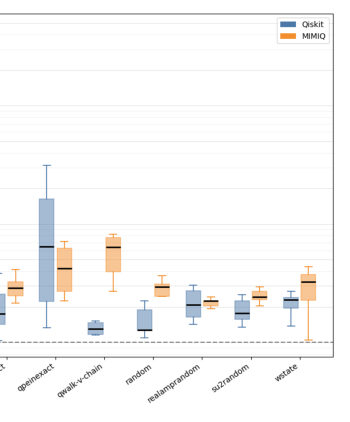
<figcaption class="paper-figure-caption"><b>Fig 2.</b> Figure 1 compares the distribution of offline optimization speedup across circuit families for Qiskit and MIMIQ. Speedup is defined as the ratio of default to optimized run time, so values above one indicate improvement. For each circuit family, the box plot aggregates the speedup values obtained for the available circuit instances at different qubit counts. The central line indicates the median, the box spans the interquartile range, and the whiskers show the spread of the observed values. Compact distributions indicate more consistent gains across instances, whereas wider ones indicate larger variability with circuit size. The two backends exhibit clearly different behavior. For Qiskit,...</figcaption>
</figure>
<figure class="paper-figure-card">
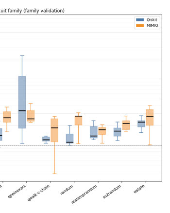
<figcaption class="paper-figure-caption"><b>Fig 3.</b> Fig. 2. Prediction speedup (ratio of default to predicted run time) by circuit family for Qiskit (blue) and MIMIQ (orange) under one-family-out validation. The black line shows the median, boxes the interquartile range, and whiskers the variability across instances. The dashed line at 1 indicates no improvement. The vertical axis is logarithmic.</figcaption>
</figure>
<figure class="paper-figure-card">
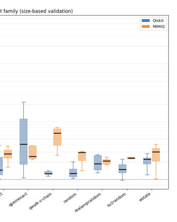
<figcaption class="paper-figure-caption"><b>Fig 4.</b> Fig. 3. Prediction speedup (ratio of default to predicted run time) by circuit family for Qiskit (blue) and MIMIQ (orange) under size-based validation. The black line shows the median, boxes the interquartile range, and whiskers the variability across instances. The dashed line at 1 indicates no improvement. The vertical axis is shown on a logarithmic scale.</figcaption>
</figure>
</div>

<p><strong>Summary.</strong> The paper introduces a novel two-stage framework to automate hyperparameter tuning for MPS simulations of quantum circuits. It first optimizes settings offline using CMA-ES and then trains a hybrid ranking model on circuit features to predict optimal configurations for new circuits. This allows researchers to efficiently manage the complex, high-dimensional search space inherent in state-of-the-art quantum simulation techniques.</p>
<p><strong>Why it may be interesting.</strong> This work directly addresses the practical limitations of simulating complex quantum dynamics by providing a machine learning tool to optimize simulation parameters, which is crucial for scaling tensor network methods.</p>
<details>
<summary>Detailed structure</summary>
<p><strong>Main problem.</strong> The core problem is developing an automated, data-driven method to select optimal hyperparameters for Matrix Product State (MPS) simulation of quantum circuits.</p>
<p><strong>Main result.</strong> A two-stage framework combining offline CMA-ES optimization with a circuit-aware hybrid ranking model can predict good configurations, recovering a meaningful fraction of the performance gain over default settings.</p>
<p><strong>Method.</strong> The approach uses an initial offline optimization phase to build a database, followed by training a complex ensemble ranking model on static circuit features to predict optimal parameters for unseen circuits.</p>
<p><strong>Model / system.</strong> The system under study is the simulation of quantum circuits using the Matrix Product State (MPS) method across various quantum backends (Qiskit and MIMIQ).</p>
<p><strong>Key observables.</strong> Run time ($T$), Fidelity ($F$), run time ratio ($r$), and fidelity gap ($\Delta F$).</p>
<p><strong>Important parameters / regimes.</strong> Hyperparameters $   heta$ (five backend parameters), fidelity constraint ($ au=99\%$), and various mixing coefficients for the ranking model.</p>
<p><strong>Assumptions / limitations.</strong> The prediction model's performance is compared against an ideal offline optimum, and size-based validation was found to be more reliable than family-based transfer.</p>
<p><strong>Figures summary.</strong> Figures compare speedup distributions from offline optimization across circuit families for Qiskit and MIMIQ, and show the predictive model's speedup under one-family-out vs. size-based validation.</p>
<p><strong>Paper structure.</strong> The paper details a two-stage process: first, building an optimization database via CMA-ES; second, training a hybrid ranking model using circuit features to predict optimal configurations for generalization.</p>
</details>
<details>
<summary>Abstract</summary>
<p>Matrix Product State (MPS) methods are among the most effective approaches for the classical simulation of quantum circuits, but their practical performance depends strongly on simulator hyperparameters, and default settings are often suboptimal. In this work, we propose a two-stage framework for automatic hyperparameter selection for quantum MPS simulation. In the first stage, we perform offline single-objective CMA-ES optimization under a fidelity constraint and construct a database of circuit--configuration--performance evaluations. In the second stage, we define a set of static circuit features designed to capture MPS-relevant structural properties and train a circuit-aware hybrid ranking model to recommend configurations for different quantum circuits. We evaluate the approach on multiple scalable circuit families using leave-one-family-out and size-based validation. The results show that offline optimization often improves over default settings, although the magnitude of the gain depends strongly on the backend, circuit family, and circuit scale. The learned predictor recovers a meaningful fraction of this gain, with better performance under size-based validation than under family-based transfer, but generally remains below the offline optimum.</p>
</details>
<p><sub><a href="#top">↑ back to top</a></sub></p>

<p><a id="paper-2606.23102"></a></p>
<h3 id="understanding-squeezed-states-of-light-through-wigners-phase-space"><a href="http://arxiv.org/abs/2606.23102v1">Understanding Squeezed States of Light Through Wigner's Phase-Space</a></h3>
<p><strong>Authors:</strong> Sibel Baskal, Marilyn E. Noz<br>
<strong>Type:</strong> theory · <strong>Category:</strong> other · <strong>PDF:</strong> <a href="https://arxiv.org/pdf/2606.23102v1">https://arxiv.org/pdf/2606.23102v1</a><br>
<strong>Analysis basis:</strong> full PDF text, analyzed in chunks
<strong>Topic relevance:</strong> <code>Keldysh / 2PI / non-Gaussian methods</code> <strong>1/5</strong> · <code>entanglement &amp; information structure</code> <strong>1/5</strong></p>
<div class="figure-strip-hint">↔ Scroll figures horizontally</div>
<div class="paper-figures-scroll">
<figure class="paper-figure-card">
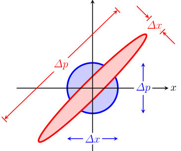
<figcaption class="paper-figure-caption"><b>Fig 1.</b> Figure 1: Illustrated as a blue circle, it corresponds to the initial vacuum state in phase space, whose area is proportional to and is a representative of minimum uncertainty ∆x∆p = 1/4. When the circle is squeezed, it is transformed into an ellipse, shown in red. This has the same area as the circle and thus is also a representative of minimum uncertainty.</figcaption>
</figure>
<figure class="paper-figure-card">
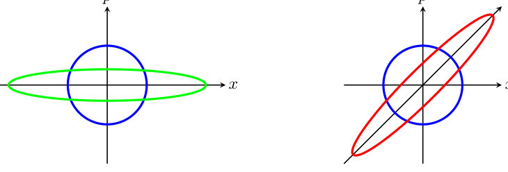
<figcaption class="paper-figure-caption"><b>Fig 2.</b> Figure 2: The transformations of Sp(2) produce rotations and squeezes. The circle in this figure corresponds to a Gaussian distribution. As shown on the left, the Lorentz boost of SO(2 , 1) along the z-direction corresponds to the squeeze of Sp(2) along the x-axis of the phase space. On the right is the action of the rotated squeeze of Sp(2), which transforms the circle into a tilted ellipse whose major axis is aligned along the p = x line. This transformation corresponds to the boost along the x-direction of SO(2 , 1).</figcaption>
</figure>
<figure class="paper-figure-card">
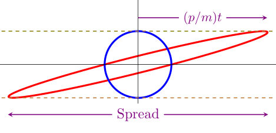
<figcaption class="paper-figure-caption"><b>Fig 3.</b> Figure 3: The spread of the Gaussian wave packet. The circle represents the Gaussian distribution, while the tilted ellipse represents the time development [68].</figcaption>
</figure>
<figure class="paper-figure-card">
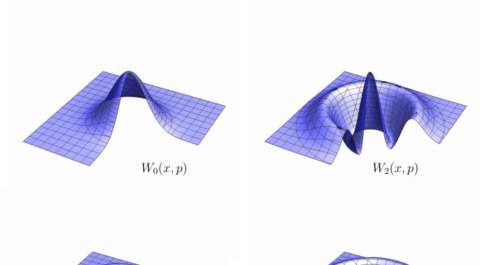
<figcaption class="paper-figure-caption"><b>Fig 4.</b> Figure 4: Wigner functions (with right-angle cross sections) of the harmonic oscillator for the ground state and for the first three excited states. The symmetry of the Wigner function with respect to x and p is apparent. It can also be observed that higher the excited state the function has more ripples around the origin.</figcaption>
</figure>
<figure class="paper-figure-card">
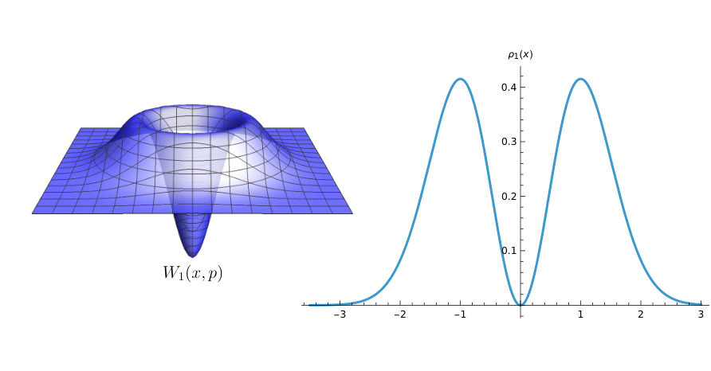
<figcaption class="paper-figure-caption"><b>Fig 5.</b> Figure 5: The Wigner function for the harmonic oscillator in the first excited state. It is negative at the origin, becomes positive as (x2 + p2) increases, and becomes vanishingly small as (x2 + p2) becomes very large. If this Wigner function is integrated over p, then it becomes the quantum probability distribution in x, which is ρ1(x) = 2x2e−x2/√π, and is positive for all values of x.</figcaption>
</figure>
</div>

<p><strong>Summary.</strong> This paper develops an advanced theoretical framework using the Wigner phase-space distribution function to analyze squeezed states of light. It unifies concepts from classical mechanics, quantum optics, and group theory by showing that state transformations are governed by specific symmetry groups like the symplectic or Lorentz groups. This provides a powerful mathematical tool for understanding entanglement and decoherence in quantum optical systems.</p>
<p><strong>Why it may be interesting.</strong> This work is highly relevant as it provides a deep mathematical underpinning for quantum optics by unifying state descriptions (Wigner function) with fundamental symmetry principles (Lie groups), which is crucial for understanding complex light-matter interactions.</p>
<details>
<summary>Detailed structure</summary>
<p><strong>Main problem.</strong> The paper aims to elucidate squeezed states of light using a unified framework based on quantum phase space, canonical transformations, and group theory.</p>
<p><strong>Main result.</strong> Phase space provides a powerful, symmetry-preserving language for quantum optics, showing that coherent and squeezed states can be generated from the vacuum via canonical transformations corresponding to specific Lie groups (like $    ext{Sp}(2)$ or Lorentz/symplectic groups).</p>
<p><strong>Method.</strong> The analysis heavily relies on defining and manipulating the Wigner phase-space distribution function, connecting it to density matrices, and employing group theoretical methods involving symplectic and Lorentz symmetries.</p>
<p><strong>Model / system.</strong> The primary system is light fields modeled by quantized harmonic oscillators. The mathematical framework extends from 2D (single mode) to 4D (two modes), incorporating concepts like the Poincaré sphere for polarization description.</p>
<p><strong>Key observables.</strong> Wigner function $W(x, p)$, squeezing parameters ($\lambda$), entanglement measures, and expectation values derived from phase-space integrals.</p>
<p><strong>Important parameters / regimes.</strong> The analysis uses natural units ($\hbar=c=1$) and focuses on the structure imposed by various symmetry groups (Lorentz, symplectic $   ext{Sp}(2n)$).</p>
<p><strong>Assumptions / limitations.</strong> The focus is primarily on the simplest form of the Wigner function; mathematical derivations often rely on established group theory results.</p>
<p><strong>Figures summary.</strong> Figures illustrate squeezing via transformation from a circle to an ellipse while preserving area, show time evolution of Gaussian wave packets (shear), and compare Wigner functions for different excitation levels ($n=0, 1, 2, 3$), highlighting negativity in excited states.</p>
<p><strong>Paper structure.</strong> The paper progresses by establishing the phase-space formalism ($  ext{Wigner}     o   ext{Density Matrix}$), detailing canonical transformations and associated symmetry groups (Euclidean/Symplectic), applying this to simple systems (harmonic oscillator, free particles), extending to multi-mode systems (two-mode squeezing), and finally relating symmetries to polarization optics via the Poincaré sphere.</p>
</details>
<details>
<summary>Abstract</summary>
<p>This paper starts with the transition from classical physics to quantum mechanics which was greatly aided by the concept of phase space. The role of canonical transformations in quantum mechanics is addressed. The Wigner phase-space distribution function is then defined which arises from the formulation of the density matrix, followed by the harmonic oscillator in phase space. Coherent and one- and two-mode squeezed states of light as well as the squeezed vacuum are discussed in the phase-space picture. Attention is also drawn to the fact that squeezed states naturally generate entanglement between the two-modes. Coupled harmonic oscillators are also elucidated in connection with the Wigner phase space. It will be noted that the phase-space picture of quantum mechanics has become an important scientific language for the rapidly expanding field of quantum optics. Here, we mainly focus on the simplest form of the Wigner function, which finds application in many branches of quantum mechanics. We make use of several symmetry groups such as Lorentz groups, the symplectic group in two and four dimensions, and the Euclidean group. The decoherence problem of an optical field is examined through a reformulation of the Poincaré sphere as a further illustration of the density matrix.</p>
</details>
<p><sub><a href="#top">↑ back to top</a></sub></p>

<p><a id="paper-2606.22843"></a></p>
<h3 id="when-the-learning-with-errors-problem-meets-the-coherent-ising-machine-a-penalty-free-algorithm-hardware-co-design"><a href="http://arxiv.org/abs/2606.22843v1">When the Learning With Errors Problem Meets the Coherent Ising Machine: A Penalty-Free Algorithm-Hardware Co-Design</a></h3>
<p><strong>Authors:</strong> Shuxian Jiang<br>
<strong>Type:</strong> both · <strong>Category:</strong> quantum information and computing · <strong>PDF:</strong> <a href="https://arxiv.org/pdf/2606.22843v1">https://arxiv.org/pdf/2606.22843v1</a><br>
<strong>Analysis basis:</strong> full PDF text, analyzed in chunks
<strong>Topic relevance:</strong> <code>QC/QI experiment</code> <strong>1/5</strong> · <code>methods for driven-dissipative</code> <strong>1/5</strong></p>
<div class="figure-strip-hint">↔ Scroll figures horizontally</div>
<div class="paper-figures-scroll">
<figure class="paper-figure-card">
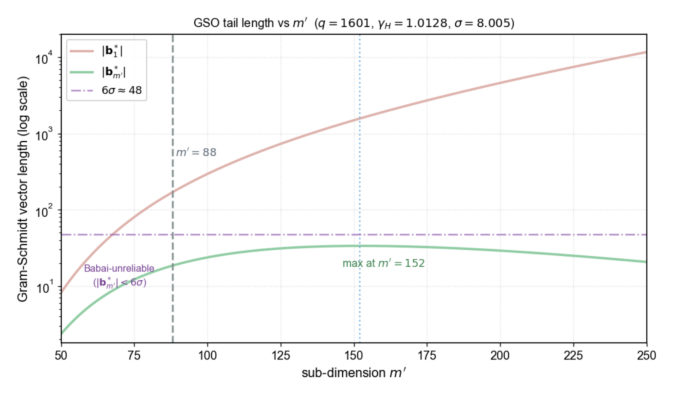
<figcaption class="paper-figure-caption"><b>Fig 1.</b> Figure 1: Trend of the theoretical ∥b∗ 1∥and ∥b∗ m′∥as functions of sub-dimension m′ for the n = 40 instance (q = 1601, γH = 1.0128 (BKZ-20), σ = 8.005). The dash-dotted purple line at 6σ ≈48 is the Babai hard-decision failure region threshold, the grey vertical line at m′ = 88 marks the point used in the experiments, the analytic maximum of ∥b∗ m′∥occurs at m′ = 152.</figcaption>
</figure>
<figure class="paper-figure-card">
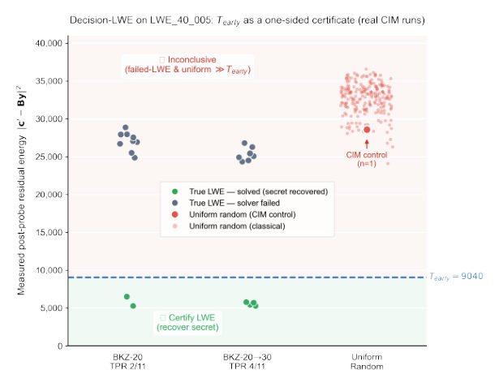
<figcaption class="paper-figure-caption"><b>Fig 2.</b> Figure 2: Decision-LWE on LWE_40_005: measured post-corrector residual energies (Tearly = 9040). Green = true-LWE seeds the pipeline solves (residual crosses below Tearly, secret recov- ered), gray = true-LWE seeds the solver fails, red = uniform-random control, light-red histogram = n=220 uniform targets evaluated by classical minimization on the same reduced bases. Pro- gressive BKZ-20 →30 raises the solved fraction from 2/11 to 4/11. The threshold separates solved from unsolved: only solved seeds cross it, while failed-LWE and uniform targets are both ≫Tearly. Energy magnitude above the threshold is not discriminative, the operative signal is the binary crossing event.</figcaption>
</figure>
</div>

<p><strong>Summary.</strong> The paper introduces CIM-BDD, a novel hybrid algorithm designed to break LWE-based cryptography on Coherent Ising Machines. It maps the problem to a penalty-free QUBO formulation suitable for NISQ hardware via advanced encoding techniques. The framework demonstrates end-to-end cryptanalysis by using an early-stopping threshold to distinguish successful lattice solves from random noise.</p>
<p><strong>Why it may be interesting.</strong> This work provides a concrete, multi-layered blueprint for attacking lattice-based cryptography using near-term quantum hardware (NISQ devices) by carefully managing the mapping from continuous mathematics to discrete Ising Hamiltonians.</p>
<details>
<summary>Detailed structure</summary>
<p><strong>Main problem.</strong> The core problem is cryptanalysis of the Learning With Errors (LWE) problem, which underpins modern Post-Quantum Cryptography. The goal is to solve this hard mathematical problem using a hybrid quantum-classical approach.</p>
<p><strong>Main result.</strong> The authors propose CIM-BDD, a penalty-free algorithm-hardware co-design that successfully demonstrates end-to-end cryptanalysis of 40-dimensional LWE instances on the Coherent Ising Machine (CIM).</p>
<p><strong>Method.</strong> LWE is reduced to a Closest Vector Problem (CVP) via algebraic elimination and then mapped to a QUBO problem. This QUBO is solved using an adaptive mixed-radix encoder driven by Continuous Relaxed Babai's Nearest Plane projection on the CIM.</p>
<p><strong>Model / system.</strong> The physical platform is the Coherent Ising Machine (CIM), which implements energy minimization via QUBO Hamiltonians. The mathematical model involves reducing LWE to a lattice problem, followed by continuous relaxation and adaptive encoding to fit NISQ hardware constraints.</p>
<p><strong>Key observables.</strong> Residual energy ($E$), distinguishing advantage ($    ext{Adv}<em ext_early="ext{early">{  ext{DLWE}}$), and the early-stopping threshold ($T</em>$).}</p>
<p><strong>Important parameters / regimes.</strong> $40$-dimensional LWE instances, $q$-ary lattice structure, and hardware constraints (e.g., 550-spin capacity).</p>
<p><strong>Assumptions / limitations.</strong> The method relies on the statistical validity of the early-stopping threshold ($T_{	ext{early}}$) to distinguish true solutions from random noise, and assumes that classical post-processing steps (like Babai's Plane) can correct hardware discretization errors.</p>
<p><strong>Figures summary.</strong> Figures illustrate energy trends showing solved LWE seeds crossing below a specific threshold relative to uniform targets, confirming the distinguishing advantage.</p>
<p><strong>Paper structure.</strong> The paper follows an algorithmic flow: 1. Algebraic isomorphism of LWE to a lattice problem. 2. Lattice reduction (BKZ). 3. Continuous relaxation via CR-BNP projection onto the exploration subspace. 4. Adaptive QUBO encoding for hardware submission. 5. Multi-stage post-processing involving Babai's Plane and a bounded corrector to recover the final secret.</p>
</details>
<details>
<summary>Abstract</summary>
<p>The Learning With Errors (LWE) problem constitutes the mathematical foundation of modern Post-Quantum Cryptography (PQC). Cryptanalysis of LWE ranges from classical lattice reduction to machine learning and quantum-classical hybrids. We propose CIM-BDD, a hybrid Bounded-Distance-Decoding solver that reduces LWE to a Quadratic Unconstrained Binary Optimization (QUBO) problem through a strictly \emph{penalty-free} mapping. An algebraic elimination of the secret embeds LWE into a $q$-ary lattice, absorbing the modular arithmetic and recasting the problem as a Closest Vector Problem (CVP). The squared error norm is then used \emph{directly} as the QUBO energy, so the cryptographic noise is the objective to be minimized rather than a penalized constraint. To realize this general model on current Noisy Intermediate-Scale Quantum (NISQ) devices, we design a special encoding method: a Continuous Relaxed Babai's Nearest Plane (CR-BNP) projection drives an adaptive mixed-radix encoder that greatly reduces both the qubit count and the QUBO coefficient range, so that a single batched hardware submission suffices. We further derive a statistically bounded early-stopping threshold ($T_{\text{early}}$) that acts as a one-sided certificate and doubles as a Decision-LWE distinguisher. We validate the framework on the TU Darmstadt LWE Challenge, giving an end-to-end demonstration for both Search- and Decision-LWE of a $40$-dimensional instance on the Coherent Ising Machine CPQC-550. This work establishes a new algorithm-hardware co-design paradigm for quantum-classical hybrid cryptanalysis.</p>
</details>
<p><sub><a href="#top">↑ back to top</a></sub></p>

<p><a id="paper-2606.23612"></a></p>
<h3 id="a-quantum-algorithm-for-one-shot-signatures"><a href="http://arxiv.org/abs/2606.23612v1">A quantum algorithm for one-shot signatures</a></h3>
<p><strong>Authors:</strong> Gopikrishnan Muraleedharan, Minh Thuy Truc Pham, Vir Pathak, Thomas Gardner, Chuanqi Zhang, QPerfect, Gavin K. Brennen<br>
<strong>Type:</strong> theory · <strong>Category:</strong> quantum information and computing · <strong>PDF:</strong> <a href="https://arxiv.org/pdf/2606.23612v1">https://arxiv.org/pdf/2606.23612v1</a><br>
<strong>Analysis basis:</strong> full PDF text, analyzed in chunks
<strong>Topic relevance:</strong> <code>entanglement &amp; information structure</code> <strong>1/5</strong></p>
<div class="figure-strip-hint">↔ Scroll figures horizontally</div>
<div class="paper-figures-scroll">
<figure class="paper-figure-card">
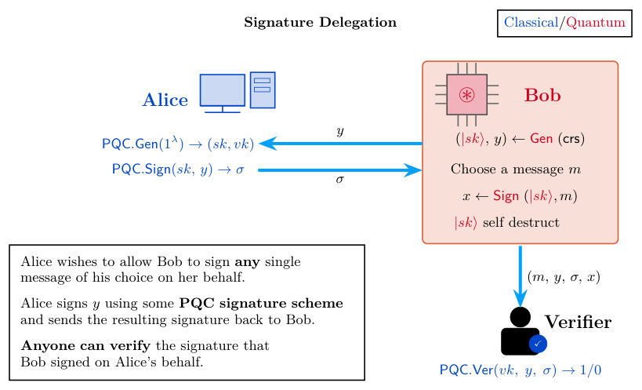
<figcaption class="paper-figure-caption"><b>Fig 1.</b> Figure 1: Signature delegation protocol. To mitigate risks from Bob’s quantum capabilities, Alice uses a post-quantum signature scheme, generating a signing key (PQC.sk) and verification key (PQC.vk). The blue arrows indicate classical communication that are public.</figcaption>
</figure>
<figure class="paper-figure-card">
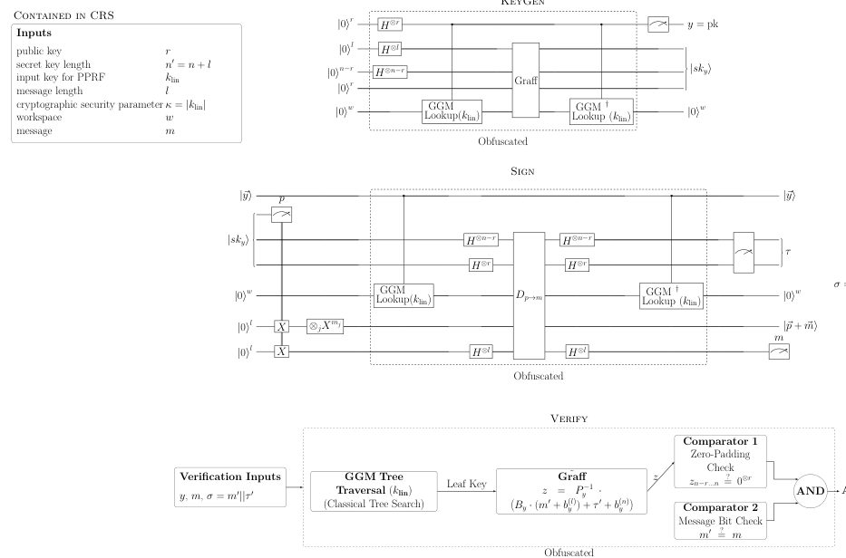
<figcaption class="paper-figure-caption"><b>Fig 2.</b> Figure 3: Workflow diagram of the multi-bit OSS protocol. The dashed boxes represent the part of the circuits that need to be obfuscated and are distributed as classical instructions contained in CRS. Note that in Sign even though the control register |⃗y⟩representing the public key is classical, it should be treated as a quantum register since those gates it controls are to be obfuscated. The bottom section outlines the corresponding classical verification protocol, which efficiently evaluates signature validity using the provided CRS parameters. The binary matrix inversion inside ˜ Graff operation can be easily done by reversing the classical sequence of gates used to perform binary...</figcaption>
</figure>
<figure class="paper-figure-card">
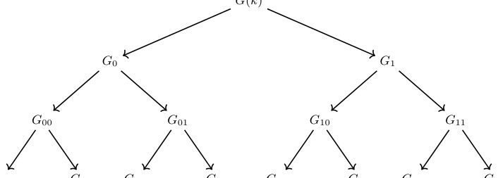
<figcaption class="paper-figure-caption"><b>Fig 3.</b> Figure 4: Sample GGM tree with r = 3. The output of the PRG is G(k) = G0∥G1. Evaluating the GGM PPRF on input 011 results in F(k, 011) = G011 = G1(G01) = G1(G1(G0(k)))</figcaption>
</figure>
<figure class="paper-figure-card">

<figcaption class="paper-figure-caption"><b>Fig 4.</b> Figure 5: Puncturing the GGM tree at 011. The puncturing key is k011 = {G1, G00, G010}. The punctured path is marked with a red dashed line, and the puncturing key’s nodes are in blue boxes.</figcaption>
</figure>
</div>

<p><strong>Summary.</strong> This paper presents an advanced, circuit-level quantum algorithm for One-Shot Signatures (OSS), which enforces that a quantum key can only be used once. While providing detailed resource estimates and showing how OSS enables secure delegation chains, the authors identify that the practical realization is currently bottlenecked by the lack of efficient Quantum Indistinguishability Obfuscators.</p>
<p><strong>Why it may be interesting.</strong> For a theoretical physicist interested in quantum information, this work provides a concrete, highly technical example of how fundamental quantum principles (like no-cloning) are mapped onto complex cryptographic protocols, pushing the boundaries of what is computationally feasible in quantum computation.</p>
<details>
<summary>Detailed structure</summary>
<p><strong>Main problem.</strong> The paper focuses on developing an explicit, circuit-level quantum algorithm for One-Shot Signatures (OSS) to create fundamentally secure, single-use cryptographic primitives.</p>
<p><strong>Main result.</strong> They provide resource estimates showing the logical qubit and gate complexity scaling for Key Generation and Signing, while identifying that the primary remaining bottleneck is the development of efficient Quantum Indistinguishability Obfuscators (qIO).</p>
<p><strong>Method.</strong> The method involves adapting existing cryptographic constructions (like those based on PPRF/GGM) into quantum circuits, analyzing resource costs, and leveraging advanced concepts like classical Information Obfuscation (iO) to secure the underlying components.</p>
<p><strong>Model / system.</strong> The model is purely theoretical, dealing with abstract quantum circuits operating on qubits. It utilizes cryptographic primitives such as Puncturable Pseudorandom Functions (PPRF), Goldreich-Goldwasser-Micali (GGM) constructions, and concepts from quantum information theory like the no-cloning theorem.</p>
<p><strong>Key observables.</strong> Logical qubit number ($\Theta(\kappa \log(r) + n + l)$) and Gate complexity ($\Theta(n^3 + nl)$).</p>
<p><strong>Important parameters / regimes.</strong> Cryptographic security parameter $\lambda$, public key size $r$, signature size $n+l$, message size $l$, and the security parameter $\kappa$.</p>
<p><strong>Assumptions / limitations.</strong> The security relies on computational hardness assumptions (e.g., distinguishing PPRF from random) and assumes the availability of fully succinct classical iO, while acknowledging that practical qIO remains a major open problem.</p>
<p><strong>Figures summary.</strong> Figures illustrate the workflow diagram for the multi-bit OSS protocol, detailing the sequence of KeyGen, Sign, and Verify steps, as well as sample structures for GGM tree evaluation paths.</p>
<p><strong>Paper structure.</strong> The paper progresses by first establishing the necessity of OSS for quantum security primitives. It then details the construction using PPRF/GGM, analyzes resource requirements via circuit complexity scaling, discusses extensions like Signature Delegation Chains, and concludes by pinpointing the need for practical quantum obfuscation tools to complete the plain-model implementation.</p>
</details>
<details>
<summary>Abstract</summary>
<p>We provide a pre-obfuscation circuit-level implementation of an efficient one shot signature scheme, which has known applications to delegated signatures, secured token transfer, and publicly verifiable randomness. The algorithm consists of two stages: a key generation stage where a classical public key/quantum secret key pair is produced, and a signing stage where the quantum secret key is processed with a message string to produce a classical signature. There is no algorithmic error in the construction and the signed message can be efficiently checked by a classical verifier. Our scheme works by preparing a superposition over elements of a random affine coset determined by the output of a puncturable pseudorandom function, together with a circuit that tests coset membership. The logical qubit number scales like $Θ( κ\log(r) + n + l)$ and the gate complexity scales like $Θ(n^3 + nl)$, where $r$ is the public key size, $n+l$ is the signature size, $l$ is the message size, and $κ= Ω(n)$ is the cryptographic security parameter. We provide explicit qubit and gate counts for varying $n$ and identify the circuit components where obfuscation would be required for security against classical and quantum polynomial time attacks.</p>
</details>
<p><sub><a href="#top">↑ back to top</a></sub></p>

<p><a id="paper-2606.22418"></a></p>
<h3 id="a-three-layer-architecture-for-fault-tolerant-quantum-computing"><a href="http://arxiv.org/abs/2606.22418v1">A Three-Layer Architecture for Fault-Tolerant Quantum Computing</a></h3>
<p><strong>Authors:</strong> Zhirao Wang, Zhou You, Yiming Huang, Tianyi Li, Ying Li, Xiao Yuan, Yuan Yao<br>
<strong>Type:</strong> theory · <strong>Category:</strong> quantum information and computing · <strong>PDF:</strong> <a href="https://arxiv.org/pdf/2606.22418v1">https://arxiv.org/pdf/2606.22418v1</a><br>
<strong>Analysis basis:</strong> full PDF text, analyzed in chunks
<strong>Topic relevance:</strong> <code>quantum measurements</code> <strong>1/5</strong></p>
<div class="figure-strip-hint">↔ Scroll figures horizontally</div>
<div class="paper-figures-scroll">
<figure class="paper-figure-card">

<figcaption class="paper-figure-caption"><b>Fig 1.</b> FIG. 1. Overall three-layer architecture. The Application Layer is responsible for algorithm specification and logical intermediate represen- tation (IR) generation. The Fault-Tolerance Layer is the architectural center of the stack and coordinates synthesis, fault-tolerant resources allocation, transpilation, decoding, and adaptive scheduling. The Hardware Layer abstracts the physical quantum device and native opera- tions. The downward interfaces are AppSubmit, which carries logical program descriptions and constraints from the Application Layer to the Fault-Tolerance Layer, and PhysDispatch, which carries backend-executable physical instructions from the Fault-Tolerance Layer to the...</figcaption>
</figure>
<figure class="paper-figure-card">

<figcaption class="paper-figure-caption"><b>Fig 2.</b> FIG. 2. Internal module of the Fault-Tolerance Layer. The layer is decomposed into five functional modules: Synthesizer, Resource Allocator, Transpiler, Decoder, and Controller. The arrows indicate the principal internal data flows among these modules. In particular, the Synthesizer emits the logical instruction stream ISA𝐿to the Resource Allocator and receives Budget hints in return; the Resource Allocator emits a fault-tolerant ResourcePlan to the Transpiler and a DecodeConfig object to the Decoder; the Transpiler emits backend-executable instructions ISA𝑃to the Controller and a DecodeContext object to the Decoder; the Decoder emits a CorrectionStream to the Controller; and the Controller...</figcaption>
</figure>
<figure class="paper-figure-card">

<figcaption class="paper-figure-caption"><b>Fig 3.</b> FIG. 3. Internal logic of the Synthesizer. The module receives the logical circuit through AppSubmit and applies a threshold-based synthesis rule to each rotation gate. For a given threshold 𝜃th, a rotation is either kept as a direct logical rotation primitive or decomposed into a Clifford+𝑇 representation. The resulting candidate logical instruction stream ISA𝐿is then checked against the current resource budget by the Resource Allocator. If the candidate is feasible, the current threshold is accepted and the resulting ISA𝐿is finalized; otherwise, the threshold is adjusted and synthesis is repeated.</figcaption>
</figure>
<figure class="paper-figure-card">

<figcaption class="paper-figure-caption"><b>Fig 4.</b> FIG. 4. Internal logic of the Resource Allocator. The allocator receives a candidate logical instruction stream ISA𝐿from the Synthesizer and explores a joint design space over factory configurations, code realizations, and layout candidates. For each candidate, it selects code parameters from the target reliability budget, evaluates factory throughput and layout constraints, and estimates the resulting spacetime cost. Feasible realizations are retained as valid ResourcePlan candidates, and the minimum-cost plan is selected. The resulting ResourcePlan is sent to the Transpiler, while the corresponding DecodeConfig is sent to the Decoder.</figcaption>
</figure>
<figure class="paper-figure-card">

<figcaption class="paper-figure-caption"><b>Fig 5.</b> FIG. 5. Internal logic of the Transpiler. The module receives a ResourcePlan from the Resource Allocator. This plan determines the active code realization, fault-tolerant resources organization, and scheduled logical operations to be executed. The Transpiler then lowers the corresponding logical instruction stream according to the selected code family and logical-operation protocol, producing two outputs: a backend-executable physical instruction stream ISA𝑃for the Controller and a DecodeContext object for the Decoder.</figcaption>
</figure>
</div>

<p><strong>Summary.</strong> This paper proposes a universal, three-layer architectural framework to solve the integration challenge in fault-tolerant quantum computing. It introduces an explicit Fault-Tolerance Layer that acts as a standardized intermediary between high-level algorithms and specific physical hardware backends. This modular design aims to create a unified standard for organizing future heterogeneous quantum systems.</p>
<p><strong>Why it may be interesting.</strong> It provides a high-level systems view necessary for theorists designing complex quantum algorithms, as it formalizes how algorithmic requirements must map onto physical constraints across different hardware modalities.</p>
<details>
<summary>Detailed structure</summary>
<p><strong>Main problem.</strong> Developing a comprehensive, hardware-agnostic architectural framework for fault-tolerant quantum computation that unifies the gap between high-level algorithmic intent and low-level physical execution.</p>
<p><strong>Main result.</strong> The authors propose a standardized three-layer architecture featuring an explicit Fault-Tolerance Layer to mediate communication and resource management across application, logical compilation, and hardware domains.</p>
<p><strong>Method.</strong> The framework is defined by abstracting the quantum stack into three layers (Application, FT, Hardware) and specifying five critical cross-layer interfaces ($  ext{AppSubmit}$, $  ext{SynMeasure}$, etc.) to manage data flow and control signals systematically.</p>
<p><strong>Model / system.</strong> The model is a conceptual architectural framework rather than a specific physical implementation. It abstracts over various platforms (superconducting, trapped ions, neutral atoms) and error correction codes (Surface Code, qLDPC).</p>
<p><strong>Key observables.</strong> Syndrome measurement streams, execution status reports ($  ext{AppReport}$), hardware diagnostics (e.g., fidelity degradation), and logical/physical instruction streams.</p>
<p><strong>Important parameters / regimes.</strong> Logical vs. physical qubit overhead, gate fidelities ($\ge 99.999\%$), coherence times, and the required resource management across layers.</p>
<p><strong>Assumptions / limitations.</strong> The primary assumption is that a standardized intermediate architectural layer can successfully decouple algorithmic intent from platform-specific implementation details to manage complexity.</p>
<p><strong>Figures summary.</strong> Figure 1 illustrates the overall three-layer architecture with its five cross-layer interfaces. Figure 2 (mentioned) details the internal components and data exchange within the Fault-Tolerance Layer.</p>
<p><strong>Paper structure.</strong> The paper systematically introduces the necessity of fault tolerance, reviews existing architectural limitations across programming/compilation/hardware layers, proposes the three-layer model, details the five modular subsystems within the FT layer, and concludes with an end-to-end example pipeline.</p>
</details>
<details>
<summary>Abstract</summary>
<p>Fault tolerance is an indispensable prerequisite for constructing large-scale universal quantum computers. Drawing philosophies from classical computer architecture, this paper presents a hardware-agnostic three-layer high-level architectural framework for generic fault-tolerant quantum computation. Guided by the real execution workflows of fault-tolerant quantum algorithms, the proposed model is decoupled from specific physical qubit hardware platforms and quantum error correction codes, serving as a universal abstract standard rather than a platform-specific implementation scheme. Special attention is devoted to the intermediate Fault-Tolerance Layer, which serves as the architectural bridge between application-level logical programs and hardware-level execution. We systematically characterize its five internal components, the interfaces and data exchanged among them, and the execution, correction, and adaptation paths that together enable logical synthesis, fault-tolerant resources management, decoding, and runtime fault-tolerant control. An end-to-end example is further provided to illustrate the full-stack operating pipeline of fault-tolerant quantum algorithms under this framework. Given the increasing emphasis on modular, heterogeneous, and cross-layer fault-tolerant quantum systems, our architecture provides a unified foundational model for organizing such designs.</p>
</details>
<p><sub><a href="#top">↑ back to top</a></sub></p>

<p><a id="paper-2606.22334"></a></p>
<h3 id="lattice-quantile-estimation-of-and-convex-region-integrals-from-coined-two-dimensional-quantum-walks"><a href="http://arxiv.org/abs/2606.22334v1">Lattice-quantile estimation of π and convex-region integrals from coined two-dimensional quantum walks</a></h3>
<p><strong>Authors:</strong> Jen-Yu Chang, En-Jui Kuo, Chih-Yu Chen, Tsung-Wei Huang<br>
<strong>Type:</strong> theory · <strong>Category:</strong> numerical methods · <strong>PDF:</strong> <a href="https://arxiv.org/pdf/2606.22334v1">https://arxiv.org/pdf/2606.22334v1</a><br>
<strong>Analysis basis:</strong> full PDF text, analyzed in chunks
<strong>Topic relevance:</strong> <code>methods for driven-dissipative</code> <strong>1/5</strong></p>
<div class="figure-strip-hint">↔ Scroll figures horizontally</div>
<div class="paper-figures-scroll">
<figure class="paper-figure-card">

<figcaption class="paper-figure-caption"><b>Fig 1.</b> FIG. 1. Achievable precision ε (RMSE of ˆπ) versus sample count M at fixed walk depth T = 200. The two sample- mean baselines improve with M: uniform MC follows the CLT line 1.64/ √</figcaption>
</figure>
<figure class="paper-figure-card">

<figcaption class="paper-figure-caption"><b>Fig 2.</b> FIG. 2. Bias-floor scaling and its number-theoretic mechanism. (a) The bias floor actually delivered by the estimator at M = 2×104 for the three coin operators and the classical random walk (grey, T −0.85), out to T = 800; markers are the value at the single quantile radius ˆR that one measured walk provides (each averaged over 30 trials). The measured floors oscillate rather than following a clean power law—e.g. the Grover floor dips at T = 500, rises at T = 600, falls at T = 800—the deterministic consequence of reading the sign-oscillating residual at a single radius (panels (b)–(c)). The faint line is the phase-averaged floor of Eq. (9) (RMS of the residual over one lattice period around...</figcaption>
</figure>
<figure class="paper-figure-card">

<figcaption class="paper-figure-caption"><b>Fig 3.</b> FIG. 3. (a) A one-parameter family of 2D Gaussian cumula- tive distributions Pσ(R) = 1 −e−R2/σ2 for σ = 0.7, 1.0, 1.5, each obtained as ˆPσ(R) = ˆπ Qσ(R) from the same single quantum-walk run (T = 200, M = 500, 50 trials; solid lines exact, open markers QW reconstruction with error bars mag- nified ×200 for visibility). The curve shapes are the classi- cally known Qσ(R); the measurement fixes the single scalar ˆπ shared across the whole family. (b) The propagated error | ˆPσ −Pσ| = Qσ(R) |ˆπ −π| for each σ (solid: QW; dashed: RW). The QW error budget stays below 3.3 × 10−5 across all radii and widths, ∼15× below the RW, inheriting the lower ballistic bias floor. All errors vanish as R →0...</figcaption>
</figure>
<figure class="paper-figure-card">

<figcaption class="paper-figure-caption"><b>Fig 4.</b> FIG. 4. (a) Energy ladder En = ℏω(n+1) of the 2D isotropic harmonic oscillator reconstructed via ˆEn = ˆπ Qn (Cavalieri, annular super-level sets), T = 200, M = 500, 50 trials; er- ror bars magnified ×30. The QW (blue) error bars are ∼10× tighter than the RW (grey); both fits recover ℏω = 1. (b) Sta- tistical error σ( ˆEn) grows linearly with level index for both walkers, as predicted by σ( ˆEn) = Qn RMSE(ˆπ) ∝(n+1); the fitted slopes (annotated) are 1.90×10−4 ℏω/level for the QW and 1.99 × 10−3 ℏω/level for the RW, a factor of 10.5 apart.</figcaption>
</figure>
<figure class="paper-figure-card">

<figcaption class="paper-figure-caption"><b>Fig 5.</b> FIG. 5. Comprehensive coin comparison for the disk estimator. (a) Radial cumulative distribution function (CDF) of the Konno limit measure at T = 200, showing the strong probability concentration near the velocity-disk boundary |v| ≈ p</figcaption>
</figure>
</div>

<p><strong>Summary.</strong> This work introduces a novel lattice-quantile estimator for integrals by leveraging the ballistic spread of 2D coined quantum walks. By replacing statistical averaging with ratios derived from lattice point counts, it bypasses the Cramér-Rao bound limitations faced by standard Monte Carlo methods. The technique allows for highly precise estimation of geometric constants and physical quantities like energy spectra using significantly fewer measurements than classical counterparts.</p>
<p><strong>Why it may be interesting.</strong> It provides a concrete demonstration of how quantum dynamics (ballistic spreading) can be harnessed in a non-algorithmic way—as a superior sampling resource—to solve fundamental problems in computational mathematics and physics, surpassing classical limits.</p>
<details>
<summary>Detailed structure</summary>
<p><strong>Main problem.</strong> To develop a numerical integration technique for estimating geometric quantities like $\pi$ and convex-region integrals that bypasses the fundamental statistical error scaling ($\mathcal{M}^{-1/2}$) of standard Monte Carlo methods.</p>
<p><strong>Main result.</strong> The method achieves an error floor dominated by deterministic number-theoretic residuals controlled by walk depth $T$, leading to a superior convergence rate compared to classical random walks and uniform MC.</p>
<p><strong>Method.</strong> It replaces the empirical sample mean with a ratio estimator, $rac{N(\hat{R})}{\hat{R}^2}$, derived from coupling the ballistic spreading of 2D quantum walks (DTQWs) to lattice point counting asymptotics (Hardy-Huxley).</p>
<p><strong>Model / system.</strong> The physical system is a coined discrete-time quantum walk on a 2D square lattice, analyzed using various coin operators (Grover, Hadamard, Fourier). The method applies to integrals whose super-level sets are convex or annular.</p>
<p><strong>Key observables.</strong> Estimates for $\pi$, areas of convex regions, and energy level spacings ($\hbar\omega$) of the 2D harmonic oscillator.</p>
<p><strong>Important parameters / regimes.</strong> Walk depth $T$ (controls ballistic spreading), sample count $M$, lattice counting exponent $\gamma$, and quantile parameter $\alpha$.</p>
<p><strong>Assumptions / limitations.</strong> The method is limited to integrals reducible to convex-region lattice counts; the analysis relies on asymptotic theorems like Hardy-Huxley and Krätzel's lattice asymptotics.</p>
<p><strong>Figures summary.</strong> Figures compare the Root Mean Square Error (RMSE) scaling of QW vs. RW/MC, showing the flat, lower bias floor for QW measurements; other figures illustrate the mechanism of oscillation in single-radius readouts versus phase-averaged results.</p>
<p><strong>Paper structure.</strong> The paper develops the estimator by first establishing the lattice-quantile framework for $\pi$ (disk), then generalizing it to convex regions via Cavalieri's principle, and finally applying this structure to reconstruct entire families of integrals (e.g., harmonic oscillator energy levels) using a single measurement.</p>
</details>
<details>
<summary>Abstract</summary>
<p>Monte Carlo integration is fundamentally limited by the M^(-1/2) rate that the Cramer-Rao bound imposes on any sample-mean estimator of an expectation value, regardless of how the samples are drawn. Coined discrete-time quantum walks (DTQWs) are known to spread ballistically - their position variance scales as T^2 against the diffusive T of classical random walks - yet this faster spreading has not been exploited for numerical integration. We show that coupling the ballistic scaling of a 2D DTQW to the Hardy-Huxley asymptotic for Gauss circle lattice counts produces estimators whose dominant error is a deterministic number-theoretic residual controlled by walk depth T, not a statistical fluctuation controlled by sample count M. The construction replaces the empirical mean of a sample-mean estimator with the ratio N(R-hat)/R-hat^2 of a lattice count to the square of a radial position quantile, a structural change that sidesteps the Cramer-Rao barrier. A single batch of measurements then propagates through classically precomputed multipliers to cover an entire family of integrals simultaneously. We develop the framework for convex smooth domains via Kraetzel's lattice asymptotic and for smooth integrals with convex or annular super-level sets via Cavalieri's principle, and provide a parameter-free identity for the bias floor (validated to within 1.5x across all tested depths). Every experiment is benchmarked against the classical random walk with the identical estimator to isolate the quantum contribution; the framework is oracle-free in the QAE sense (no controlled unitary encoding the integrand is required) and structurally distinct from quantum amplitude estimation and Szegedy-walk approaches. These ratios compare measurement counts at fixed precision and do not include quantum circuit execution cost.</p>
</details>
<p><sub><a href="#top">↑ back to top</a></sub></p>

<p><a id="paper-2606.23392"></a></p>
<h3 id="on-the-cryptographic-potential-of-single-qubit-rotations"><a href="http://arxiv.org/abs/2606.23392v1">On the cryptographic potential of single-qubit rotations</a></h3>
<p><strong>Authors:</strong> Alex B. Grilo, Lucas Hanouz, Anne Marin<br>
<strong>Type:</strong> theory · <strong>Category:</strong> quantum information and computing · <strong>PDF:</strong> <a href="https://arxiv.org/pdf/2606.23392v1">https://arxiv.org/pdf/2606.23392v1</a><br>
<strong>Analysis basis:</strong> full PDF text, analyzed in chunks
<strong>Topic relevance:</strong> <code>quantum measurements</code> <strong>1/5</strong></p>
<div class="figure-strip-hint">↔ Scroll figures horizontally</div>
<div class="paper-figures-scroll">
<figure class="paper-figure-card">

<figcaption class="paper-figure-caption"><b>Fig 1.</b> Figure 1: The state distribution systems of Charlie (left) and Bob (right)</figcaption>
</figure>
<figure class="paper-figure-card">

<figcaption class="paper-figure-caption"><b>Fig 2.</b> Figure 2: The system SIM plugged on SDB.</figcaption>
</figure>
<figure class="paper-figure-card">

<figcaption class="paper-figure-caption"><b>Fig 3.</b> Figure 3: The distinguisher D and the system S, either equal to SDC n or SDB n ◦SIMn.</figcaption>
</figure>
<figure class="paper-figure-card">

<figcaption class="paper-figure-caption"><b>Fig 4.</b> Figure 4: Charlie’s state distribution SDC source and its variant SDCNOT .</figcaption>
</figure>
</div>

<p><strong>Summary.</strong> The paper demonstrates that many quantum cryptographic protocols do not require direct access to trusted qubit sources or detectors. Instead, they can be securely re-engineered to function using only a device capable of performing arbitrary single-qubit rotations on the Qline architecture. This significantly simplifies hardware requirements and validates the versatility of rotation-based quantum communication channels.</p>
<p><strong>Why it may be interesting.</strong> This work provides a powerful resource-reduction technique, showing that complex quantum protocols can be simplified by standardizing the required hardware trust model around basic single-qubit operations, which is highly relevant for building scalable quantum networks.</p>
<details>
<summary>Detailed structure</summary>
<p><strong>Main problem.</strong> To show that most quantum cryptographic protocols requiring trusted qubit preparation or measurement can be re-engineered to rely only on a trusted single-qubit rotation device.</p>
<p><strong>Main result.</strong> The work establishes composably secure constructions demonstrating that the Qline architecture, relying solely on single-qubit rotations, is sufficient to support a wide range of quantum cryptographic tasks.</p>
<p><strong>Method.</strong> Security proofs are established by showing the indistinguishability ($\approx_0$) between protocols using ideal trusted components and those implemented using only single-qubit rotation devices coupled with untrusted sources/detectors.</p>
<p><strong>Model / system.</strong> The primary model is the Qline architecture, which constrains operations to single-qubit rotations. The analysis covers cryptographic primitives like state distribution for measurement and preparation.</p>
<p><strong>Key observables.</strong> Composably secure implementation of quantum tasks; indistinguishability ($\approx_0$) between simulated and actual protocols.</p>
<p><strong>Important parameters / regimes.</strong> The security advantage $\epsilon$; the underlying protocol structure (e.g., QKD, QOT).</p>
<p><strong>Assumptions / limitations.</strong> The constructions assume a trusted single-qubit rotation device; specific assumptions are made about the decomposability of the original protocols.</p>
<p><strong>Figures summary.</strong> Figures schematically illustrate the setup for state distribution systems ($S_{DC}$ vs $S_{DB}$) and the structure of the simulator used in security proofs.</p>
<p><strong>Paper structure.</strong> The paper progresses by first proving secure replacement for single-qubit measurement (Theorem 1), then tackling qubit preparation using CNOT gates (Theorem 2), and finally generalizing to entanglement-based scenarios (Theorem 3) for broader applicability.</p>
</details>
<details>
<summary>Abstract</summary>
<p>In the domain of quantum communication, cryptographic protocols often require users to have access to trusted qubit sources or detectors. Recently, it was shown that on an architecture called the Qline, several protocols can equivalently be performed by parties capable only of single-qubit rotations. In this work, we introduce two composably secure constructions that together show how in most quantum cryptographic protocols, parties traditionally required to perform trusted qubit preparation or measurement can delegate these tasks to an untrusted provider and instead rely on a trusted single-qubit rotation device. Our first construction implements single-qubit measurement and is universally applicable across any context. In contrast, our second construction, which addresses qubit preparation, relies on specific assumptions regarding the underlying protocol. We show, however, that these assumptions are inherently satisfied by the vast majority of common quantum cryptographic protocols. A notable consequence of our results is the formal validation of the Qline as a versatile architecture capable of supporting a wide range of single-qubit protocols.</p>
</details>
<p><sub><a href="#top">↑ back to top</a></sub></p>

<p><a id="paper-2606.23411"></a></p>
<h3 id="quantum-convolutional-neural-networks-for-groundwater-heat-plume-prediction-a-surrogate-modeling-approach"><a href="http://arxiv.org/abs/2606.23411v1">Quantum Convolutional Neural Networks for Groundwater Heat Plume Prediction: A Surrogate Modeling Approach</a></h3>
<p><strong>Authors:</strong> Danyal Maheshwari, Julia Pelzer, Miriam Schulte<br>
<strong>Type:</strong> both · <strong>Category:</strong> disordered systems and neural networks · <strong>PDF:</strong> <a href="https://arxiv.org/pdf/2606.23411v1">https://arxiv.org/pdf/2606.23411v1</a><br>
<strong>Analysis basis:</strong> full PDF text, analyzed in chunks
<strong>Topic relevance:</strong> <code>methods for driven-dissipative</code> <strong>1/5</strong></p>
<div class="figure-strip-hint">↔ Scroll figures horizontally</div>
<div class="paper-figures-scroll">
<figure class="paper-figure-card">

<figcaption class="paper-figure-caption"><b>Fig 1.</b> Figure 1: Qualitative, exemplary comparison between LAHM, PAHM, TOM, and FEFLOW from left to right on systems of varying size. Source [18].</figcaption>
</figure>
<figure class="paper-figure-card">

<figcaption class="paper-figure-caption"><b>Fig 2.</b> Figure 2: Comparison of 1HP-NN to analytical and simulation approaches: Isolines of the temperature field in steady-state of an exemplary data point with the simulated result on top, then the prediction from the CNN and on the bottom the calculated result from the analytical approach LAHM. Example with v ¡ 1m/day for which LAHM is not intended. Source [8].</figcaption>
</figure>
<figure class="paper-figure-card">

<figcaption class="paper-figure-caption"><b>Fig 3.</b> Figure 3: Schematic diagram of QCNN</figcaption>
</figure>
<figure class="paper-figure-card">

<figcaption class="paper-figure-caption"><b>Fig 4.</b> Figure 4: IQP encoding</figcaption>
</figure>
<figure class="paper-figure-card">

<figcaption class="paper-figure-caption"><b>Fig 5.</b> Figure 5: summarizes the training and testing mean squared error (MSE) across five settings: (a) QCNN on the IBMQ Kyiv real hardware, (b) QCNN on Kyiv with advanced error mitigation, (c) QCNN on an ideal statevector simulator, (d) QCNN on a simulator with a realistic noise model, and (e) a classical CNN baseline.</figcaption>
</figure>
</div>

<p><strong>Summary.</strong> This work proposes using Quantum Convolutional Neural Networks (QCNNs) as a fast surrogate model for predicting groundwater heat plumes. The authors test the QCNN's performance across various quantum hardware settings, comparing it against classical CNNs. While showing promise under ideal or error-mitigated conditions, the results indicate that current classical methods remain superior for this specific geophysical prediction task.</p>
<p><strong>Why it may be interesting.</strong> It applies advanced machine learning techniques (QCNNs) to a geophysical modeling problem, providing insights into when quantum computation might offer an advantage over mature classical ML methods in complex physical simulations.</p>
<details>
<summary>Detailed structure</summary>
<p><strong>Main problem.</strong> The paper addresses the challenge of predicting complex groundwater heat plume temperature variations caused by geothermal heat pumps in a computationally efficient manner.</p>
<p><strong>Main result.</strong> While Quantum Convolutional Neural Networks (QCNNs) show promise and competitive performance on simulators, classical CNN baselines still achieve the highest predictive accuracy under current hardware limitations.</p>
<p><strong>Method.</strong> The authors developed and tested a QCNN architecture as a surrogate model to replace expensive numerical simulations for heat plume prediction.</p>
<p><strong>Model / system.</strong> The system modeled is groundwater heat transport influenced by geothermal heat pumps. The approach uses a QCNN, which incorporates quantum convolutional layers, pooling layers, and readout stages parameterized by rotational gates on quantum circuits.</p>
<p><strong>Key observables.</strong> Mean Squared Error (MSE) used for benchmarking; predicted temperature field isolines (e.g., 1-K isotherm).</p>
<p><strong>Important parameters / regimes.</strong> The study evaluates performance across five regimes: ideal simulator, noisy simulator, real hardware (unmitigated), real hardware (error-mitigated), and classical CNN baseline.</p>
<p><strong>Assumptions / limitations.</strong> The input data is reduced from full field simulations to a compact set of representative parameters (e.g., permeability and pressure gradient).</p>
<p><strong>Figures summary.</strong> Figure 6 compares predicted heat plumes across five settings: real hardware, error-mitigated hardware, ideal simulator, noisy simulator, and classical CNN baseline.</p>
<p><strong>Paper structure.</strong> The paper introduces the problem of groundwater heat plume prediction, details the QCNN architecture (including Hamiltonian encoding), evaluates performance using MSE across multiple quantum computing backends, and compares results against established analytical and classical deep learning models.</p>
</details>
<details>
<summary>Abstract</summary>
<p>Quantum machine learning methods are increasingly explored for modeling complex environmental systems, including groundwater heat plume dynamics. In this work, we explore a Quantum Convolutional Neural Network (QCNN) as a surrogate model for predicting temperature variations in groundwater induced by geothermal heat pumps in the city of Munich. To comply with the scalability constraints of current quantum hardware, the original high-dimensional simulation output is reduced to a compact set of representative parameters that serve as training targets for the surrogate. The proposed QCNN architecture consists of a quantum convolutional layer, a quantum pooling layer, and a fully connected quantum readout stage. Convolution and pooling operations are realized via parameterized quantum circuits based on rotational gates and measurement-driven decoding, while a Hamiltonian-inspired feature-encoding scheme is used to prepare informative input states on the quantum device. We evaluate the QCNN across multiple execution backends, including an ideal statevector simulator, a noisy simulator, IBM's 127-qubit Kyiv quantum processor, and the same hardware augmented with advanced error-mitigation techniques. Realistic noise models are employed to approximate device behavior and to assess the impact of mitigation strategies. Model performance is benchmarked using mean squared error (MSE) on both training and testing sets. The results show that, although classical neural networks still achieve the highest predictive accuracy, the QCNN attains competitive and consistent performance on simulators and exhibits noticeable improvement under error-mitigated hardware conditions. These findings indicate that quantum-enhanced surrogate modeling is a promising direction for future groundwater temperature prediction as quantum hardware and error-mitigation techniques continue to mature.</p>
</details>
<p><sub><a href="#top">↑ back to top</a></sub></p>

<p><a id="paper-2606.23628"></a></p>
<h3 id="two-dimensional-stealthy-hyperuniform-polycrystalline-disk-packings"><a href="http://arxiv.org/abs/2606.23628v1">Two-dimensional stealthy hyperuniform polycrystalline disk packings</a></h3>
<p><strong>Authors:</strong> Carlo Vanoni, Paul J. Steinhardt, Salvatore Torquato<br>
<strong>Type:</strong> theory · <strong>Category:</strong> disordered systems and neural networks · <strong>PDF:</strong> <a href="https://arxiv.org/pdf/2606.23628v1">https://arxiv.org/pdf/2606.23628v1</a><br>
<strong>Analysis basis:</strong> full PDF text, analyzed in chunks
<strong>Topic relevance:</strong> <code>interference shaping light</code> <strong>1/5</strong></p>
<div class="figure-strip-hint">↔ Scroll figures horizontally</div>
<div class="paper-figures-scroll">
<figure class="paper-figure-card">

<figcaption class="paper-figure-caption"><b>Fig 1.</b> FIG. 1. (a) Configuration of N = 4000 disks obtained with the collective coordinate optimization procedure for χ = 0.0025 and ϕ = 0.86. This configuration can be interpreted as a two-phase medium, with disks constituting one phase, and the space between them forming the second phase. (b) Each disk is assigned to a grain (blue) or grain boundary (red) depending on whether or not they have or not 6 neighbors within a distance d &lt; 2a(1+τ), where a = p</figcaption>
</figure>
<figure class="paper-figure-card">

<figcaption class="paper-figure-caption"><b>Fig 2.</b> FIG. 2. (a) If all disks have six neighbors at distance d &lt; dτ, with dτ defined in Eq. (21), they are assigned to a grain (blue). (b) Near a grain boundary, some disks satisfy this condition (disk 1, solid lines), while others do not and are assigned to the boundary (disks 2, 3, and 4, dashed lines).</figcaption>
</figure>
<figure class="paper-figure-card">

<figcaption class="paper-figure-caption"><b>Fig 3.</b> FIG. 3. Grains (blue) and grain boundaries (red) for the same packing at different threshold values τ [Eq. (21)]. For small τ (upper left), no grains are identified. As τ increases, more disks are assigned to grains. For large τ, almost all disks are assigned to grains. We use τ = 0.08, where the grain–boundary interface is maximal.</figcaption>
</figure>
<figure class="paper-figure-card">

<figcaption class="paper-figure-caption"><b>Fig 4.</b> FIG. 4. Grain–boundary interface length, averaged over 100 SHU configurations at ϕ = 0.86, as a function of the tolerance τ. At small τ, the average interface is near zero, consistent with the upper-left panel of Fig. 3. As τ increases, the inter- face increases and reaches a broad maximum plateau before returning toward zero at large τ. We choose the optimal tol- erance at the onset of this plateau (vertical red dashed line), namely τ = 0.08. The inset shows the same data on a log- linear scale.</figcaption>
</figure>
<figure class="paper-figure-card">

<figcaption class="paper-figure-caption"><b>Fig 5.</b> FIG. 7. Autocorrelation function for the two-phase medium composed of grains and grain boundaries derived from disk packings. Dashed colored lines show the small-distance ap- proximation in Eq. (22). The red dashed line corresponds to the random-checkerboard two-phase medium (analytic ex- pression in Ref. [71]).</figcaption>
</figure>
</div>

<p><strong>Summary.</strong> This work develops and analyzes two-dimensional Stealthy Hyperuniform (SHU) polycrystals using computational optimization. The SHU structures are shown to possess superior physical properties—including perfect low-frequency optical transparency and enhanced long-time diffusion—compared to conventionally formed disordered packings. This demonstrates a pathway to engineer functional materials by controlling density fluctuations in polycrystalline media.</p>
<p><strong>Why it may be interesting.</strong> The ability to engineer macroscopic transport and optical properties (like low-$k$ transparency) by controlling the long-range density fluctuations in a disordered, polycrystalline structure is highly relevant for designing metamaterials and understanding complex condensed matter interfaces.</p>
<details>
<summary>Detailed structure</summary>
<p><strong>Main problem.</strong> To generate and characterize two-dimensional polycrystalline packings that are ultradense, stealthy, and hyperuniform (SHU), contrasting them with standard models of polycrystals.</p>
<p><strong>Main result.</strong> Polycrystalline SHU packings exhibit unique long-range correlations leading to perfect transparency at low wave vectors and enhanced diffusion spreadability compared to nonhyperuniform LS packings.</p>
<p><strong>Method.</strong> The study uses a collective-coordinate optimization procedure (CCO) to enforce stealthy hyperuniformity ($S(k)=0$ for $0 < k \le K$) in 2D disk packings, followed by comparisons of structural and transport properties.</p>
<p><strong>Model / system.</strong> The system consists of identical hard disks forming polycrystalline structures. The analysis compares SHU-generated packings against those from the standard Lubachevsky–Stillinger (LS) rapid compression algorithm, treating them as two-phase media (grains vs. boundaries).</p>
<p><strong>Key observables.</strong> Structure factor $S(k)$, grain size distribution, diffusion spreadability $S(t)$, and the imaginary part of the effective dynamic dielectric constant $    ext{Im}(\epsilon_{  ext{eff}})$ for optical response.</p>
<p><strong>Important parameters / regimes.</strong> Stealthiness parameter ($\chi$), wave vector ($k$), packing fraction ($\phi$), and characteristic length scales related to grain size.</p>
<p><strong>Assumptions / limitations.</strong> The SHU structures are idealized models not expected to form spontaneously in nature; the analysis relies on nonlocal strong-contrast expansions for optical response.</p>
<p><strong>Figures summary.</strong> Figures compare spectral densities $   ilde{\chi}_V(k)$ showing zero weight at low $k$ for SHU vs. finite weight for LS, and plot grain size distributions highlighting a characteristic peak in SHU.</p>
<p><strong>Paper structure.</strong> The paper introduces the concept of SHU packings via CCO optimization, compares their structural diagnostics (e.g., $  ilde{\chi}_V(k)$) against standard models (LS), and then analyzes functional properties like diffusion decay rates and optical transparency using established two-phase medium formalisms.</p>
</details>
<details>
<summary>Abstract</summary>
<p>Polycrystals consist of grains of local crystalline order separated by grain boundaries. Their structure is not hyperuniform, even though perfect crystals are, because polycrystals consist of randomly sized and oriented grains that generate appreciable long-wavelength density fluctuations. In this paper, we use a collective-coordinate optimization procedure to generate two-dimensional polycrystalline packings composed of identical disks arranged in a pattern that is ultradense, stealthy, and hyperuniform (hereafter named SHU). We compare them with polycrystalline disk packings obtained via a modified Lubachevsky--Stillinger rapid compression algorithm (hereafter named LS), a molecular dynamics protocol that serves as a standard reference model describing realistic, nonhyperuniform polycrystalline microstructures. We carry out an extensive comparison of polycrystalline SHU and LS packings that includes differences in two-point statistics, grain size, specific surface area, diffusion spreadability, and optical response as quantified by the imaginary part of the effective dynamic dielectric constant. We find that the polycrystalline SHU packings exhibit a distinctive grain-size distribution, a consequence of long-range correlations between different grains that is absent in the nonhyperuniform case. Within the nonlocal strong-contrast expansion, we confirm that polycrystalline SHU packings made of dielectric material are perfectly transparent to electromagnetic waves at small wave vectors, in contrast to LS packings. Moreover, polycrystalline SHU packings offer enhanced diffusion spreadability. Although polycrystalline SHU packings are not expected to form spontaneously in nature, they may be created for applications as metamaterials via nanolithography or 3D printing that take advantage of their distinctive optical and transport properties.</p>
</details>
<p><sub><a href="#top">↑ back to top</a></sub></p>
<h2 id="other-papers-7">Other papers (7)</h2>
<p><em>Papers from primary archives without highlighted authors or any topic match. Click to expand.</em></p>
<details>
<summary>Show other papers</summary>

<p><a id="paper-2606.21974"></a></p>
<h3 id="fine-tuning-large-language-models-for-quantum-reasoning"><a href="http://arxiv.org/abs/2606.21974v1">Fine-Tuning Large Language Models for Quantum Reasoning</a></h3>
<p><strong>Authors:</strong> Katherine Ip, Casey R. Myers, Udaya Parampalli, James Quach, Peiyong Wang<br>
<strong>Type:</strong> theory · <strong>Category:</strong> quantum information and computing · <strong>PDF:</strong> <a href="https://arxiv.org/pdf/2606.21974v1">https://arxiv.org/pdf/2606.21974v1</a><br>
<strong>Analysis basis:</strong> full PDF text, analyzed in chunks</p>
<div class="figure-strip-hint">↔ Scroll figures horizontally</div>
<div class="paper-figures-scroll">
<figure class="paper-figure-card">

<figcaption class="paper-figure-caption"><b>Fig 1.</b> Figure 3: Train and validation loss of SFT training for the Non-parameterised (left) and Pa- rameterised (right) circuit sets. Both sets converge within one epoch (390 steps).</figcaption>
</figure>
<figure class="paper-figure-card">

<figcaption class="paper-figure-caption"><b>Fig 2.</b> Figure 4: Step-by-step quantum state fidelity of the SFT model during inference, evaluated on the Non-parameterised (left) and Parameterised (right) circuit sets. Fidelity remains above 99% throughout for the Non-parameterised set, while the Parameterised set exhibits a steeper decline with gate depth yet stays above 95% in aggregate, demonstrating that the model maintains a coherent intermediate quantum state representation across both settings. Notably, 5-qubit circuits show the most pronounced fidelity decline in both sets, reflecting the increased difficulty of tracking quantum state evolution over circuits with greater system size.</figcaption>
</figure>
<figure class="paper-figure-card">

<figcaption class="paper-figure-caption"><b>Fig 3.</b> Figure 5: Training dynamics of the GRPO stage for the Non-parameterised and Parameterised circuit sets. Mean reward (left), actor entropy (centre), and mean response length (right) are plotted against training step. Both sets show a pattern of rising reward that is accompanied by declining entropy and shorter responses, indicating that the model converges toward more accurate and concise reasoning strategies. The Non-parameterised set converges faster than Parameterised set, reflecting the greater task complexity of parameterised circuits. Despite the difference in reward levels, entropy and response length converge to similar values across both sets by the end of training.</figcaption>
</figure>
<figure class="paper-figure-card">

<figcaption class="paper-figure-caption"><b>Fig 4.</b> Figure 6: Three-stage TVD progression and token-limit violation counts. (top) Mean TVD across the base model, Stage 1 SFT, and SFT+GRPO for the Non-parameterised and Parame- terised sets on the three evaluation sets. (bottom) Number of samples whose generation exceeds the 32,768-token limit at each stage. The sharp rise in token-limit violations at Stage 1 SFT for the Parameterised set explains the elevated TVD at that stage. Stage 2 GRPO suppresses this by learning more concise reasoning strategies.</figcaption>
</figure>
<figure class="paper-figure-card">

<figcaption class="paper-figure-caption"><b>Fig 5.</b> Figure 7: Mean TVD as a function of circuit complexity for the Non-Parameterised Set (left column) and Parameterised Set (right column), broken down by number of qubits (top), circuit depth (middle), and number of gates (bottom). The number of qubits shows the strongest correlation with TVD degradation, followed by the number of gates, while circuit depth has the least influence.</figcaption>
</figure>
</div>
<p><strong>Summary.</strong> The paper investigates methods to teach Large Language Models (LLMs) genuine quantum reasoning by training them on explicit quantum circuit simulation traces. By comparing Supervised Fine-Tuning (SFT) against a more advanced SFT+GRPO pipeline, the authors demonstrate that multi-stage RL fine-tuning significantly improves the model's ability to extrapolate its reasoning to larger and more complex quantum systems.</p>
<p><strong>Why it may be interesting.</strong> This work directly addresses how advanced AI models can be engineered to handle complex physical simulations required in quantum information science, potentially creating powerful tools for algorithm design or circuit verification.</p>
<details>
<summary>Detailed structure</summary>
<p><strong>Main problem.</strong> The core challenge is developing fine-tuning pipelines for Large Language Models (LLMs) that instill genuine quantum reasoning capabilities, moving beyond mere task-specific pattern matching.</p>
<p><strong>Main result.</strong> Targeted multi-stage fine-tuning, particularly combining Supervised Fine-Tuning (SFT) with Group Relative Policy Optimisation (GRPO), significantly advances LLM performance on quantum circuit simulation compared to baselines.</p>
<p><strong>Method.</strong> The study uses quantum circuit simulation as a training objective, comparing SFT on explicit state-vector traces against an advanced two-stage SFT+GRPO approach guided by verifiable rewards.</p>
<p><strong>Model / system.</strong> The system involves simulating quantum circuits (sequences of gates) to predict the final measurement probability distribution. The LLM architecture is a transformer decoder stack, trained to generate step-by-step reasoning traces that mimic state evolution.</p>
<p><strong>Key observables.</strong> Measurement probability distribution, step-by-step state fidelity, In-distribution accuracy, Gate-count extrapolation accuracy, and Total Variation Distance (TVD).</p>
<p><strong>Important parameters / regimes.</strong> Qubit count (system size), number of gates (circuit depth/length), and the fine-tuning hyperparameters for SFT and GRPO.</p>
<p><strong>Assumptions / limitations.</strong> The primary assumption tested is whether observed high performance reflects genuine understanding or merely memorization of structured training examples. The analysis often relies on approximations like rounding amplitudes to two decimal places.</p>
<p><strong>Figures summary.</strong> Figures illustrate state fidelity degradation with complexity, the convergence of training loss for SFT, and how GRPO helps mitigate token-limit violations during extrapolation tasks.</p>
<p><strong>Paper structure.</strong> The paper introduces the problem (quantum reasoning gap), details the methods (SFT vs. SFT+GRPO), presents results across multiple evaluation sets (in-distribution, gate/system size extrapolation), and concludes by analyzing generalization failures.</p>
</details>
<details>
<summary>Abstract</summary>
<p>Large language models (LLMs) exhibit abilities beyond natural language modelling and text generation. Recent advances in their reasoning capabilities have spurred interest in applying LLMs to complex scientific tasks requiring deep domain expertise and sophisticated reasoning. Quantum computing, as a highly specialised field with significant knowledge barriers and hardware constraints, could greatly benefit from such advancements. However, a key open question that first must be answered is: How can we develop fine-tuning pipelines that instil genuine quantum reasoning in LLMs, rather than task-specific pattern matching? We study this question through quantum circuit simulation as a training objective, where the model must predict the measurement probability distribution resulting from a sequence of quantum gate operations. We propose and compare two fine-tuning pipelines: (1) Supervised Fine-Tuning (SFT) on explicit gate-by-gate state-vector simulation traces, and (2) a two-stage SFT+Group Relative Policy Optimisation (GRPO) approach that sequentially applies SFT followed by GRPO with verifiable rewards. Our findings show that SFT achieves near-perfect in-distribution and gate-count extrapolation accuracy, significantly outperforming both the base model and the GPT-OSS-120B baseline. SFT+GRPO trades some in-distribution precision for better generalisation to larger qubit systems that SFT alone cannot handle. Both pipelines significantly outperform the baselines, demonstrating that targeted fine-tuning on explicit reasoning traces is an effective strategy for advancing quantum reasoning in LLMs.</p>
</details>
<p><sub><a href="#top">↑ back to top</a></sub></p>

<p><a id="paper-2606.22594"></a></p>
<h3 id="hierarchical-logical-processor-on-the-rotated-surface-code-with-shuttle-buses"><a href="http://arxiv.org/abs/2606.22594v1">Hierarchical Logical Processor on the Rotated Surface Code with Shuttle Buses</a></h3>
<p><strong>Authors:</strong> Zi-Han Chen, Ming-Cheng Chen, Chao-Yang Lu, Jian-Wei Pan<br>
<strong>Type:</strong> theory · <strong>Category:</strong> quantum information and computing · <strong>PDF:</strong> <a href="https://arxiv.org/pdf/2606.22594v1">https://arxiv.org/pdf/2606.22594v1</a><br>
<strong>Analysis basis:</strong> full PDF text, analyzed in chunks</p>
<div class="figure-strip-hint">↔ Scroll figures horizontally</div>
<div class="paper-figures-scroll">
<figure class="paper-figure-card">

<figcaption class="paper-figure-caption"><b>Fig 1.</b> FIG. 1. Architecture of a hierarchical logical processor. (a) Basic working units—cores and shuttle buses—for a hierarchi- cal logical processor. (b) A bus-core CNOT gate between an X bus and two cores with d0 = 3 and d1 = 2. (c) A core-bus CNOT gate between two cores and a Z bus. (d–e) Level-1 circuits representing an X-basis and a Z-basis readout gadget, respectively. Logical qubits on cores and on shuttle buses are shown as dark and orange lines, respectively. Level-1 CNOT gates in every dashed box are implemented by a bus-core or core-bus CNOT gate. Each teal block labeled by αb repre- sents at least αb level-0 SE rounds.</figcaption>
</figure>
<figure class="paper-figure-card">

<figcaption class="paper-figure-caption"><b>Fig 2.</b> FIG. 2. Benchmarking the memory performance of various hierarchical logical processors (HLP). (a) Level-1 layout of an HLP based on the [[64, 34, 4]] Square Berg code [1]. Cores (level-1 data qubits) and shuttle buses (level-1 ancilla qubits) are represented by dark squares and orange rectangles, re- spectively. Each Level-1 X (or Z) stabilizer is shown as a red (or blue) circle and is connected to all level-1 data qubits on its support by red (or blue) lines. (b) Circuit-level simu- lations of two HLPs based on the [[4, 2, 2]] Iceberg code and the [[64, 34, 4]] Square Berg code, respectively. We fix αc = 1. The first HLP is operated under either αb = 0.5 or αb = 1. The second HLP is...</figcaption>
</figure>
<figure class="paper-figure-card">

<figcaption class="paper-figure-caption"><b>Fig 3.</b> FIG. 3. Logical Pauli measurements on a hierarchical logical processor (HLP). (a) A Z-basis logical measurement sequence of d1 logical readout gadgets, in d1 consecutive level-1 syn- drome extraction (SE) rounds; each logical readout gadget is embedded in a distinct level-1 SE round. (b) Dense packing of logical readout gadgets from different logical measurement sequences targeting logical Pauli Z operators P1, P2, and P3, respectively. Each teal strip on the core represents a single level-0 SE round. (c) Performance of logical Z measurements on an HLP whose level-1 code is the [[8, 6, 2]] Iceberg code. The memory baseline is composed of five level-1 SE rounds with perfect time boundaries....</figcaption>
</figure>
<figure class="paper-figure-card">

<figcaption class="paper-figure-caption"><b>Fig 4.</b> FIG. 4. Cores and shuttle buses. (a–c) A core, an X bus, and a Z bus, respectively, with d0 = 3 and d1 = 2. (d–f) A core, an X bus, and a Z bus, respectively, with d0 = 4 and d1 = 2. Every dashed yellow region supports a bus-core (or core-bus) CNOT gate between an X (or Z) bus and a core.</figcaption>
</figure>
<figure class="paper-figure-card">

<figcaption class="paper-figure-caption"><b>Fig 5.</b> FIG. 5. Level-1 X error locations on a core. Only the con- trol side of core-bus CNOT gates in M acting on the core is illustrated.</figcaption>
</figure>
</div>
<p><strong>Summary.</strong> The paper introduces the Hierarchical Logical Processor (HLP) to enhance fault tolerance in quantum computing by combining high-rate codes with the Rotated Surface Code. By using 'shuttle buses' and specific gate scheduling, it drastically reduces the frequency of complex long-range couplings required for error correction. This results in substantial improvements in qubit efficiency and operational speed compared to existing surface code implementations.</p>
<p><strong>Why it may be interesting.</strong> This work directly addresses resource overheads in large-scale quantum computation by proposing a hierarchical structure that mitigates the need for frequent long-range interactions, which is critical for physical realization on current hardware platforms.</p>
<details>
<summary>Detailed structure</summary>
<p><strong>Main problem.</strong> The primary challenge is achieving fault-tolerant quantum computation (FTQC) with high encoding efficiency while minimizing the frequency and complexity of non-local couplings required for syndrome extraction.</p>
<p><strong>Main result.</strong> The proposed Hierarchical Logical Processor (HLP) significantly improves qubit efficiency (3-4 times higher than RSC) and reduces space overhead/cycle time compared to standard surface code implementations.</p>
<p><strong>Method.</strong> The authors propose concatenating a high-rate quantum CSS code with the Rotated Surface Code, utilizing 'shuttle buses' for parallel syndrome extraction via transversal hybrid-unit CNOT gates.</p>
<p><strong>Model / system.</strong> The model is an HLP architecture built on the Rotated Surface Code (RSC), involving core patches and shuttle buses. It analyzes error suppression through specific compilation parameters ($\alpha_b = d_1, \alpha_c = 1$) during level-1 syndrome extraction.</p>
<p><strong>Key observables.</strong> Logical qubit efficiency, space overhead reduction (100-200 physical qubits), logical error rate (LER) decay rates, and cycle time reduction factors (20-30).</p>
<p><strong>Important parameters / regimes.</strong> Physical error rate ($10^{-3}$), base-code distance ($d_0$), level-1 code distance ($d_1$), and compilation parameters ($\alpha_b, \alpha_c$).</p>
<p><strong>Assumptions / limitations.</strong> The analysis relies on a phenomenological depolarizing noise model and assumes that setting specific compilation parameters effectively suppresses level-1 error correlations.</p>
<p><strong>Figures summary.</strong> Figures illustrate the HLP architecture (cores/shuttle buses), benchmarking memory performance using Iceberg/Square Berg codes, detailing logical Pauli measurement gadgets (H-transformed, HS-transformed), and showing soft-output simulation results for LER extrapolation.</p>
<p><strong>Paper structure.</strong> The paper progresses from introducing the HLP concept to proving error suppression via specific gate parameter choices. It then benchmarks memory performance, demonstrates parallel logical measurements using specialized gadgets, and concludes with detailed theoretical bounds on measurement error probabilities.</p>
</details>
<details>
<summary>Abstract</summary>
<p>Quantum platforms with beyond-planar connectivity provide new opportunities for fault-tolerant quantum computation (FTQC). While quantum low-density parity-check (qLDPC) codes offer high encoding efficiency, their direct implementation requires non-local couplings in every round of syndrome extraction, incurring additional physical error and implementation complexity. To reduce the frequency of such couplings, we propose the Hierarchical Logical Processor (HLP), which concatenates a high-rate quantum CSS code with the rotated surface code (RSC). HLPs can achieve beyond-RSC encoding efficiency while requiring long-range connectivity only once every $Θ(d_0)$ rounds of level-0 error correction, where $d_0$ denotes the base-code distance, substantially reducing the frequency of non-local couplings relative to direct implementations of qLDPC codes. HLPs introduce elongated RSC patches called shuttle buses. Using transversal hybrid-unit CNOT gates, a single shuttle bus can simultaneously couple to multiple standard RSC patches. This capability enables efficient level-1 syndrome extraction with suppressed level-1 error correlations and supports highly parallel logical Pauli measurements. We perform circuit-level simulations of several concrete HLP constructions and benchmark both logical memory and logical Pauli measurement performance. At a physical error rate of $10^{-3}$, an HLP based on the [[256,194,4]] code achieves 3-4 times higher qubit efficiency than the standard RSC. Compared with the yoked surface code on the same level-1 code, this HLP reduces the space overhead per logical qubit by 100-200 physical qubits and shortens the logical error-correction cycle time by a factor of 20-30.</p>
</details>
<p><sub><a href="#top">↑ back to top</a></sub></p>

<p><a id="paper-2606.23614"></a></p>
<h3 id="log-concavity-and-tunneling-adiabatic-quantum-optimization-for-convex-functions-with-a-spike"><a href="http://arxiv.org/abs/2606.23614v1">Log-concavity and tunneling: adiabatic quantum optimization for convex functions (with a spike)</a></h3>
<p><strong>Authors:</strong> Arthur Braida, Elie Bermot, Simon Apers<br>
<strong>Type:</strong> theory · <strong>Category:</strong> quantum information and computing · <strong>PDF:</strong> <a href="https://arxiv.org/pdf/2606.23614v1">https://arxiv.org/pdf/2606.23614v1</a><br>
<strong>Analysis basis:</strong> full PDF text, analyzed in chunks</p>
<div class="figure-strip-hint">↔ Scroll figures horizontally</div>
<div class="paper-figures-scroll">
<figure class="paper-figure-card">

<figcaption class="paper-figure-caption"><b>Fig 1.</b> Figure 1: Example of a non-monotone potential satisfying the RM condition for n = 100 with ak = p</figcaption>
</figure>
<figure class="paper-figure-card">

<figcaption class="paper-figure-caption"><b>Fig 2.</b> Figure 2: Plot of the function m∗(a)/n obtained for n = 40 and k0 = −3. m∗(a) is obtained by solving the equation a = n−2m∗ √</figcaption>
</figure>
<figure class="paper-figure-card">

<figcaption class="paper-figure-caption"><b>Fig 3.</b> Figure 3: Overlap between the optimal binomial ansatz state |φm⟩and the ground state |ψ0(s)⟩of H(s) = −(1 −s)A + sV for n = 40 and different potentials: the quadratic potential V (k) = k2 (used in Section 6), a shifted quadratic potential V (k) = (k −k∗)2 with minimizer at k∗= n/3, and a piecewise-linear potential V (k) = ϵ1k 1k&lt;k0 + (ϵ1k0 + ϵ2(k −k0)) 1k≥k0, with n = 40, ϵ1 = 1/n, ϵ2 = 2n, and k0 = n/4.</figcaption>
</figure>
</div>
<p><strong>Summary.</strong> The paper develops a framework using log-concavity properties to analyze quantum tunneling effects in Adiabatic Quantum Optimization. It extends these techniques from simple potentials to general convex functions, culminating in an efficient time complexity bound for solving the quadratic Hamming weight problem via quantum annealing.</p>
<p><strong>Why it may be interesting.</strong> This research provides rigorous mathematical tools (log-concavity bounds) to analyze quantum speedups in optimization problems, directly impacting the theoretical understanding of adiabatic quantum computation efficiency.</p>
<details>
<summary>Detailed structure</summary>
<p><strong>Main problem.</strong> The work analyzes how quantum tunneling provides a computational speedup for Adiabatic Quantum Optimization (AQO) when minimizing complex cost functions, extending analysis beyond simple cases like the Hamming weight.</p>
<p><strong>Main result.</strong> By establishing log-concavity of the ground state wavefunction, the authors derive new spectral gap bounds and show that the quadratic HWS problem can be solved in $O(n^4)$ time via AQO under specific spike conditions.</p>
<p><strong>Method.</strong> The methodology combines structural analysis (proving discrete log-concavity for Schrödinger operators) with perturbation theory applied to the spectral gap, linking these properties directly to computational complexity bounds.</p>
<p><strong>Model / system.</strong> The system is modeled by a 1D quantum Hamiltonian $H(s)$ interpolating between an initial state and a target potential $V$, often involving quadratic potentials ($V_q$) and localized spike perturbations ($h$).</p>
<p><strong>Key observables.</strong> Spectral Gap ($\Delta$), Log-concavity/Ultra-log-concavity of the ground state wavefunction, Overlap $\left| \langle\psi_0|\varphi_m
angle
ight|^2$.</p>
<p><strong>Important parameters / regimes.</strong> The spike height ($ar{h}$), the support boundaries ($\ell, u$), and the system size ($n$).</p>
<p><strong>Assumptions / limitations.</strong> The analysis heavily relies on establishing log-concavity of the ground state as a key structural property, which allows for bounding the spectral gap even in the presence of spikes.</p>
<p><strong>Figures summary.</strong> Figures illustrate potential energy landscapes (e.g., quadratic potentials) and show the overlap between the true ground state wavefunction and an optimal binomial ansatz state $|\varphi_m
angle$.</p>
<p><strong>Paper structure.</strong> The paper progresses by first establishing log-concavity for a general family of Hamiltonians, then using this structural property to extend perturbative spike analysis (Reichardt's work) to quadratic potentials, culminating in the time complexity bound for the quadratic HWS problem.</p>
</details>
<details>
<summary>Abstract</summary>
<p>Quantum tunneling is expected to provide a computational speedup in quantum computing, a phenomenon that Adiabatic Quantum Optimization (AQO) aims to leverage. While some academic proofs of concept have been studied, such as the "Hamming weight with a spike" (HWS) problem, the algorithmic gains of this effect remain underexplored. In this work we extend the analysis underlying HWS to more general potentials.   In the first half of the work, we establish (discrete) log-concavity of the ground state as a key structural property in this context. We devise a framework for establishing log-concavity of the ground state for a large family of discrete, 1-dimensional Schrödinger operators. The family includes convex potentials, but also certain potentials with local minima. In the convex case, this provides a discrete version of a continuous result by Brascamp and Lieb ('76). We demonstrate the utility of our result by establishing new spectral gap bounds, going beyond related results by Jarret and Jordan ('14) for convex potentials.   In the second half of the work, we use our results on log-concavity to extend the perturbative analysis of HWS by Reichardt ('04) to the larger family of potentials with log-concave ground state. As a concrete instantiation, we use our result to extend the HWS analysis from a linear potential (which is exactly solvable) to a quadratic potential (which is no longer solvable). Our result strongly suggests the broader applicability of tunneling to convex potentials with spikes</p>
</details>
<p><sub><a href="#top">↑ back to top</a></sub></p>
<hr>
<p>
<a href="index.html">← Index</a>
 · <a href="papers_06.html">← Previous</a> · <a href="papers_08.html">Next →</a>
</p>
<hr>

</body>
</html>
